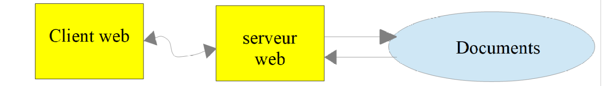
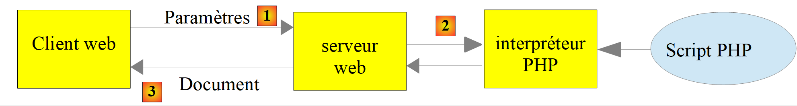
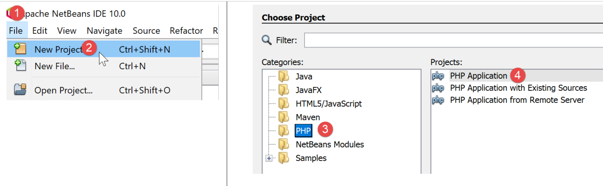
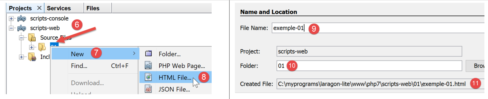
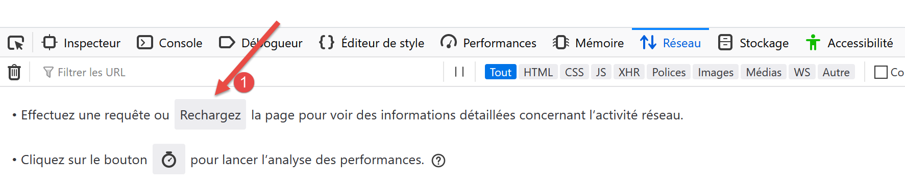
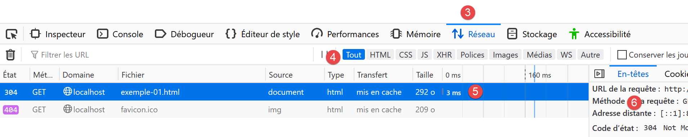
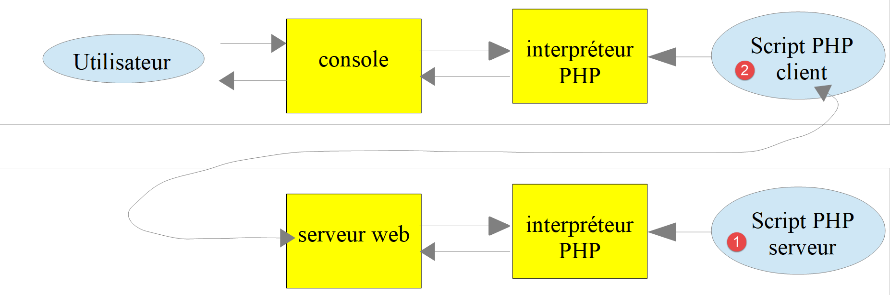
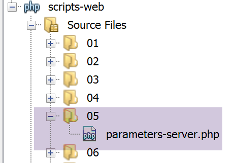
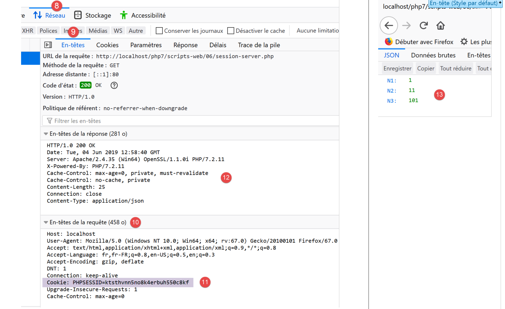
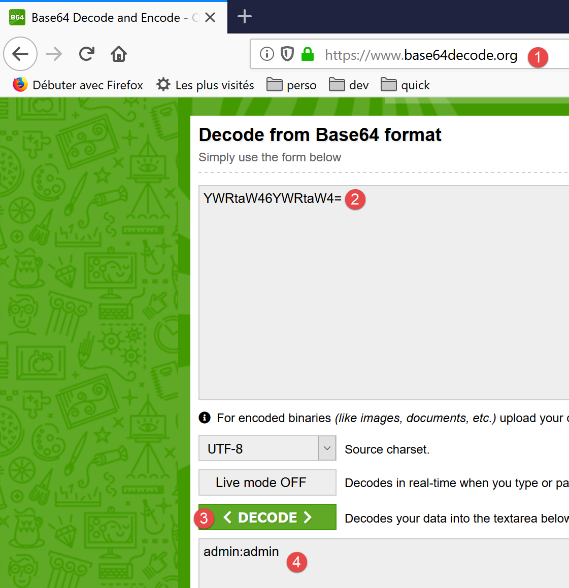

17. Serviços web
Nota: por «serviço web», entende-se aqui qualquer aplicação web que forneça dados brutos utilizados por um cliente — um script de consola, nos exemplos que se seguem. Não nos interessamos por uma tecnologia específica, como, por exemplo, REST (REpresentational State Transfer) ou SOAP (Simple Object Access Protocol), que fornecem dados mais ou menos brutos num formato bem definido. O REST fornece jSON, enquanto que, no caso do SOAP, o resultado é XML. Cada uma destas tecnologias descreve com precisão a forma como o cliente deve interrogar o servidor e o formato que a resposta deste deve assumir. Neste curso, seremos muito mais flexíveis quanto à natureza do pedido do cliente e à da resposta do servidor. No entanto, os scripts escritos e as ferramentas utilizadas são semelhantes aos da tecnologia REST.
17.1. Introduction
Uma vez que os programas PHP podem ser executados por um servidor WEB, um programa deste tipo torna-se um programa de servidor capaz de servir vários clientes. Do ponto de vista do cliente, chamar um serviço web equivale a solicitar o URL desse serviço. O cliente pode ser escrito em qualquer linguagem, nomeadamente em PHP. Neste último caso, utilizam-se então as funções de rede que acabámos de ver. Além disso, é necessário saber «comunicar» com um serviço web, ou seja, compreender o protocolo http de comunicação entre um servidor WEB e os seus clientes. Esse era o objetivo do parágrafo anterior.
O cliente web descrito no parágrafo «ligação» permitiu-nos descobrir uma parte do protocolo HTTP.

Na sua versão mais simples, as trocas cliente/servidor são as seguintes:
- o cliente estabelece uma ligação com a porta 80 do servidor web;
- envia um pedido relativo a um documento;
- o servidor web envia o documento solicitado e encerra a ligação;
- o cliente, por sua vez, encerra a ligação;
O documento pode ser de diversa natureza: um texto no formato HTML, uma imagem, um vídeo… Pode ser um documento existente (documento estático) ou um documento gerado dinamicamente por um script (documento dinâmico). Neste último caso, fala-se de programação web. O script de geração dinâmica de documentos pode ser escrito em várias linguagens: PHP, Python, Perl, Java, Ruby, C#, VB.net…
A seguir, iremos utilizar scripts PHP para gerar dinamicamente documentos de texto.

- no [1], o cliente estabelece uma ligação com o servidor, solicita um script PHP e pode ou não enviar parâmetros para esse script;
- no [2], o servidor web faz com que o script PHP seja executado pelo interpretador PHP. O script gera um documento que é enviado ao cliente [3];
- o servidor encerra a ligação. O cliente faz o mesmo;
O servidor web pode processar vários clientes ao mesmo tempo.
Com o pacote de software [Laragon], o servidor web é um servidor Apache, um servidor de código aberto da Apache Foundation (http://www.apache.org/). Nas aplicações que se seguem, o [Laragon] deve ser iniciado:

Isto inicia o servidor web Apache, bem como o SGBD e o MySQL.
Os scripts executados pelo servidor web serão escritos com a ferramenta NetBeans. Até agora, escrevemos scripts PHP executados num contexto de consola:

O utilizador utiliza a consola para solicitar a execução de um script PHP e receber os resultados.
Nas aplicações cliente/servidor que se seguem:
- o script do cliente é executado num contexto de consola;
- o script do servidor é executado num contexto web;

O script PHP do servidor não pode estar em qualquer local do sistema de ficheiros. Com efeito, o servidor web procura, nos locais especificados pela configuração, os documentos estáticos e dinâmicos que lhe são solicitados. A configuração predefinida do Laragon faz com que os documentos sejam procurados na pasta <Laragon>/www, em que <Laragon> é a pasta de instalação do Laragon. Assim, se um cliente web solicitar um documento D com o caminho URL [http://localhost/D], o servidor web fornecer-lhe-á o documento D com o caminho [<Laragon>/www/D].
Nos exemplos que se seguem, colocaremos os scripts do servidor na pasta [www/php7/scripts-web]. Se um script do servidor se chamar S.php, será solicitado ao servidor web com o URL [http://localhost/php7/scripts-web/S.php]. Será então fornecido o documento [<Laragon>/www/php7/scripts-web/S.php].

- em [1], o ficheiro [<laragon>/www];
- no [2], o ficheiro [php7/scripts-web];
Para criar scripts de servidor com o NetBeans, procederemos da seguinte forma:

- no [1-2], criamos um novo projeto
- em [3-4], selecionamos a categoria [PHP] e o projeto [PHP Application]

- em [5], o nome do projeto;
- em [6], a pasta do projeto no sistema de ficheiros. Note que esta se encontra na pasta [<laragon>/www], onde deve estar;
- em [7-8], aceite os valores predefinidos propostos;
- em [9-10], aceite os valores predefinidos propostos. Em [10], note que o URL dos scripts que iremos colocar neste projeto começará pelo caminho [http://localhost/php7/scripts-web/];

- em [11], são-lhe propostos frameworks web escritos em PHP. Estes frameworks são indispensáveis assim que a aplicação web ganhar alguma dimensão;
- em [12], é possível adicionar bibliotecas PHP utilizando a ferramenta [Composer]. Utilizámos esta ferramenta duas vezes numa janela [Terminal] do Laragon:
- para instalar a biblioteca [SwiftMailer], que permite enviar e-mails;
- para instalar a biblioteca [php-mime-mail-parser], que permite ler e-mails;
- no [13], assim que o assistente de criação do projeto for validado, este aparece no [13] no separador dos projetos;
17.2. Criação de uma página estática
Nota: Para prosseguir, é necessário que o [Laragon] esteja em execução.
Vamos mostrar como criar uma página estática HTML (HyperText Markup Language) utilizando o NetBeans:

- no [1-5], criamos uma pasta com o nome [01];


- em [6-12], criamos um ficheiro HTML [exemple-01.html];
O ficheiro [exemple-01.html] é gerado pré-preenchido da seguinte forma (maio de 2019):
<!DOCTYPE html>
<!--
To change this license header, choose License Headers in Project Properties.
To change this template file, choose Tools | Templates
and open the template in the editor.
-->
<html>
<head>
<title>TODO supply a title</title>
<meta charset="UTF-8">
<meta name="viewport" content="width=device-width, initial-scale=1.0">
</head>
<body>
<div>TODO write content</div>
</body>
</html>
Vamos alterar o seu conteúdo da seguinte forma:
<!DOCTYPE html>
<html>
<head>
<title>PHP7 par l'exemple</title>
<meta charset="UTF-8">
<meta name="viewport" content="width=device-width, initial-scale=1.0">
</head>
<body>
<div><b>Ceci est un exemple de page statique</b></div>
</body>
</html>
Alterámos o título da página (linha 4) e o seu conteúdo (linha 9).
Agora, vamos fazer com que esta página HTML seja apresentada pelo servidor Apache do Laragon:

- em [1-2], fazemos com que a página seja apresentada pelo servidor Apache do Laragon;
- em [3], o URL da página apresentada;
- em [4], o título que alterámos;
- em [5], o conteúdo que alterámos;
A página apresentada é uma página estática: pode ser carregada quantas vezes se quiser no navegador (F5), sendo sempre apresentado o mesmo conteúdo.
A maioria dos navegadores permite aceder aos dados trocados entre o cliente e o servidor, os que foram descritos no parágrafo «ligação». Com o navegador Firefox (maio de 2019), é necessário executar F12 para aceder a esses dados:

Tal como indicado em [1], vamos atualizar a página (F5):

- em [2], o documento carregado pelo navegador: selecionamo-lo;

- em [5], o documento a analisar está selecionado;
- em [3-4], solicitamos a visualização das trocas cliente/servidor;
- em [6], essas trocas;

- em [7], seleciona-se o separador dos cabeçalhos;
- em [8], o URL solicitado pelo navegador;
- em [9], o comando enviado ao servidor é [GET http://localhost/php7/scripts-web/01/exemple-01.html HTTP/1.1];
- em [10], os cabeçalhos HTTP enviados em seguida pelo navegador (o cliente);
- em [11], os cabeçalhos HTTP da resposta do servidor;

- em [12-14], a resposta do servidor enviada após os cabeçalhos HTTP;
- em [14], vemos que o navegador do cliente recebeu a página HTML que criámos. Em seguida, interpretou esse código para apresentar o seguinte:

17.3. Criação de uma página dinâmica em PHP
Vamos agora escrever uma página dinâmica em PHP:


- em [1-8], criamos uma página [exemple-01.php];
O ficheiro [exemple-01.php] é gerado pré-preenchido da seguinte forma (maio de 2019):
<!DOCTYPE html>
<!--
To change this license header, choose License Headers in Project Properties.
To change this template file, choose Tools | Templates
and open the template in the editor.
-->
<html>
<head>
<meta charset="UTF-8">
<title></title>
</head>
<body>
<?php
// coloque aqui o seu código
?>
</body>
</html>
Alteramos o código acima da seguinte forma:
<!DOCTYPE html>
<html>
<head>
<meta charset="UTF-8">
<title>Exemple de page dynamique</title>
</head>
<body>
<?php
// tempo: número de milissegundos entre o momento atual e 01/01/1970
// formato de exibição da data e hora
// d: dia com 2 dígitos
// m: mês com 2 dígitos
// y: ano com 2 dígitos
// H: hora 0,23
// I: minutos
// s: segundos
print "<b>Date et heure du jour : </b>" . date("d/m/y H:i:s", time());
?>
</body>
</html>
Comentários
- linha 5: alterámos o título da página;
- linha 17: escreve a data e a hora atuais;
Basicamente, o script PHP acima apresenta a hora atual na consola. No entanto, quando executado por um servidor web, o fluxo de saída da instrução [print], que normalmente está associado à consola de execução do script, é redirecionado para a ligação que liga o servidor ao seu cliente. Assim, num contexto web, o script acima envia a hora atual na forma de texto para o cliente, neste caso um navegador.
Vamos executar o script [exemple-01.php]:

- em [3], o URL solicitado ao servidor web Apache;
- em [4], o título da página que alterámos;
- em [5], o conteúdo gerado pela instrução [print];
Temos aqui uma página dinâmica, pois se recarregarmos a página várias vezes no navegador (F5), o seu conteúdo muda (a hora muda).
O navegador recebeu um fluxo HTML. Para o conhecer, é necessário visualizar o código-fonte da página no navegador:

- para aceder ao menu [1], clique com o botão direito do rato na página no navegador;
- em [2], o URL da página [exemple-01.php], precedido pelos prefixos [view-source :] e [3];
- em [4], o conteúdo HTML que o navegador apresentou;
É, portanto, importante lembrar que um script PHP destinado a ser executado por um servidor web deve produzir um fluxo HTML.
Vejamos agora (F12) os cabeçalhos HTTP enviados pelo servidor ao navegador do cliente:

- em [3], um cabeçalho HTTP que não estava presente quando solicitámos a página estática. Este cabeçalho indica que a resposta do servidor foi gerada por um script PHP;
Vimos que a resposta (o fluxo HTML, neste caso) do servidor podia ser gerada por um script PHP. O script também pode gerar os cabeçalhos HTTP e praticamente todos os elementos da resposta do servidor.
17.4. Noções básicas da linguagem HTML
Este capítulo não se vai debruçar sobre a programação em WEB. Uma aplicação web MVC é desenvolvida no parágrafo com o link. Este capítulo centra-se, antes, nos serviços web: páginas PHP que fornecem, através de um servidor web, dados destinados a outros clientes PHP. No entanto, considerámos útil apresentar ao leitor alguns conceitos básicos de HTML.
Um navegador da Web pode apresentar vários documentos, sendo o mais comum o documento HTML (HyperText Markup Language). Trata-se de um texto formatado com balizas do tipo <balise>texte</balise>. Assim, o texto <b>important</b> exibirá o texto important em negrito. Existem balizas isoladas, como a baliza <hr/>, que exibe uma linha horizontal. Não iremos abordar as balizas que podem ser encontradas num texto HTML. Existem inúmeros programas WYSIWYG que permitem criar uma página WEB sem escrever uma única linha de código HTML. Estas ferramentas geram automaticamente o código HTML a partir de um layout criado com o rato e controlos predefinidos. Assim, é possível inserir (com o rato) uma tabela na página e, em seguida, consultar o código HTML gerado pelo software para descobrir as balizas a utilizar para definir uma tabela numa página WEB. Não é mais complicado do que isso. Além disso, o conhecimento da linguagem HTML é indispensável, uma vez que as aplicações web dinâmicas têm de gerar elas próprias o código HTML a enviar aos clientes WEB. Este código é gerado por programa e, naturalmente, é necessário saber o que deve ser gerado para que o cliente tenha a página web que deseja.
Em resumo, não é necessário conhecer toda a linguagem HTML para começar a programar para a Web. No entanto, esse conhecimento é necessário e pode ser adquirido através da utilização de software WYSIWYG para a criação de páginas WEB, tais como o DreamWeaver e dezenas de outros. Outra forma de descobrir as subtilezas da linguagem HTML é navegar na Web e visualizar o código-fonte das páginas que apresentam características interessantes e ainda desconhecidas para si.
Consideremos o exemplo seguinte, que apresenta alguns elementos que podem ser encontrados num documento WEB, tais como:
- uma tabela;
- uma imagem;
- um link.

Um documento HTML tem a seguinte estrutura geral:
<html> <head> <title>Um título</title> ... </head> <atributos do corpo> ... </body></html>
Todo o documento é delimitado pelas tags <html>…</html>. É composto por duas partes:
- <head>…</head>: esta é a parte não visível do documento. Fornece informações ao navegador que irá apresentar o documento. Nesta parte encontra-se frequentemente a baliza <title>…</title>, que define o texto que será apresentado na barra de título do navegador. Também podem existir outras balizas, nomeadamente as que definem as palavras-chave do documento, palavras-chave posteriormente utilizadas pelos motores de busca. Nesta parte também podem encontrar-se scripts, na maioria das vezes escritos em JavaScript ou VBScript, que serão executados pelo navegador.
- <body atributos>…</body>: esta é a parte que será apresentada pelo navegador. As balizas HTML contidas nesta parte indicam ao navegador a forma visual «desejada» para o documento. Cada navegador interpretará estas balizas à sua maneira. Dois navegadores podem, assim, visualizar de forma diferente um mesmo documento web. Este é, geralmente, um dos desafios dos web designers.
O código HTML do nosso documento de exemplo é o seguinte:
<!DOCTYPE html>
<html xmlns="http://www.w3.org/1999/xhtml">
<head>
<meta http-equiv="Content-Type" content="text/html; charset=utf-8" />
<title>Quelques balises HTML</title>
</head>
<body style="background-image: url(images/standard.jpg)">
<h1 style="text-align: left">Quelques balises HTML</h1>
<hr />
<table border="1">
<thead>
<tr>
<th>Colonne 1</th>
<th>Colonne 2</th>
<th>Colonne 3</th>
</tr>
</thead>
<tbody>
<tr>
<td>cellule(1,1)</td>
<td style="text-align: center;">cellule(1,2)</td>
<td>cellule(1,3)</td>
</tr>
<tr>
<td>cellule(2,1)</td>
<td>cellule(2,2)</td>
<td>cellule(2,3</td>
</tr>
</tbody>
</table>
<br/><br/>
<table border="0">
<tr>
<td>Une image</td>
<td>
<img border="0" src="images/cerisier.jpg"/></td>
</tr>
<tr>
<td>Le site de Polytech'Angers</td>
<td><a href="http://www.polytech-angers.fr/fr/index.html">ici</a></td>
</tr>
</table>
</body>
</html>
etiquetas e exemplos HTML | |
<title>Algumas balizas HTML</title> (linha 5) o texto [Quelques balises HTML] aparecerá na barra de título do navegador que exibirá o documento | |
<hr />: exibe uma linha horizontal (linha 10) | |
<table atributos>….</table>: para definir a tabela (linhas 12, 32) <thead>…</thead>: para definir os cabeçalhos das colunas (linhas 13, 19) <tbody>…</tbody>: para definir o conteúdo da tabela (linhas 20 e 31) <tr atributos>…</tr>: para definir uma linha (linhas 21, 25) <td atributos>…</td>: para definir uma célula (linha 22) exemplos: <table border="1">…</table>: o atributo border define a espessura da borda da tabela <td style="text-align: center;">célula(1,2)</td> (linha 23): define uma célula cujo conteúdo será célula(1,2). Este conteúdo será centrado horizontalmente (text-align: center). | |
<img border="0" src="images/cerisier.jpg"/> (linha 38): define uma imagem sem borda (border=0") cujo ficheiro de origem é [images/cerisier.jpg] no servidor web (src="images/cerisier.jpg"). Esta ligação encontra-se num documento web obtido com o URL http://localhost/php7/scripts-web/01/balises.html. Assim, o navegador irá solicitar o URL http://localhost/php7/scripts-web/01/images/cerisier.jpg para obter a imagem aqui referenciada. | |
<a href="http://www.polytech-angers.fr/fr/index.html">aqui</a> (linha 42): faz com que o texto ici funcione como um link para o URL http://www.polytech-angers.fr/fr/index.html. | |
<body style="background-image: url(images/standard.jpg)"> (linha 8): indica que a imagem que deve servir de fundo da página se encontra no endereço URL [images/standard.jpg] do servidor WEB. No contexto do nosso exemplo, o navegador irá solicitar o endereço http://localhost/php7/scripts-web/01/images/standard.jpg para obter esta imagem de fundo. |
Neste exemplo simples, vemos que, para construir o documento na íntegra, o navegador tem de efetuar três pedidos ao servidor:
- http://localhost/php7/scripts-web/01/images/balises.html para obter o código-fonte HTML do documento
- http://localhost/php7/scripts-web/01/images/cerisier.jpg para obter a imagem cerisier.jpg
- http://localhost/php7/scripts-web/01/images/standard.jpg para obter a imagem de fundo standard.jpg
É isso que mostram as trocas de dados entre o cliente e o servidor (F12 no navegador):

- em [3-5], vemos as três solicitações feitas pelo navegador;
17.5. Tornar dinâmica uma página estática
Vamos mostrar como podemos tornar dinâmica a página HTML [exemple-01.html]. Copiemos o conteúdo

Copiámos o conteúdo de [exemple-01.html] para o ficheiro [page-01.php]. Se executarmos o script web [2], obtemos o seguinte no navegador:

- em [3], o URL solicitado;
- em [4], o título da página;
- em [5], o conteúdo da página;
Se visualizarmos o código recebido pelo navegador, encontramos o seguinte:

- em [7], temos o código HTML inserido no script [exemple-01.php]
O interpretador PHP interpretou o script [page-01.php] e produziu o mesmo fluxo HTML que a página estática [exemple-01.html]. No script [page-01.php], não havia nenhum PHP, apenas HTML. Assim, aprendemos uma coisa: quando o interpretador PHP encontra HTML num script PHP, não o altera e envia-o tal como está para o cliente.
Agora, vamos inserir algumas instruções PHP no script [page-01.php] para que o interpretador PHP tenha algo para fazer:
<!DOCTYPE html>
<html>
<head>
<title><?php print $page->title ?></title>
<meta charset="UTF-8">
<meta name="viewport" content="width=device-width, initial-scale=1.0">
</head>
<body>
<div><b><?php print $page->contents ?></b></div>
</body>
</html>
Nas linhas 4 e 9, inserimos código PHP para gerar dinamicamente o título e o conteúdo da página. Partimos aqui do princípio de que a variável [$page] é um objeto que contém os dados a apresentar.
Se executarmos este novo código, obtemos o seguinte resultado no navegador:

- em [1], o URL solicitado;
- em [2], o título da página não pôde ser apresentado porque a variável [$page] não estava definida;
- em [3], o mesmo se aplica ao conteúdo;
Agora, vamos escrever o seguinte script web [exemple-02.php]:

O script [exemple-02.php] será o seguinte:
<?php
// definimos os elementos da página a apresentar
$page=new \stdclass();
$page->title="Un nouveau titre";
$page->contents="Un nouveau contenu généré dynamiquement";
// exibe-se [page-01]
require_once "page-01.php";
- linhas 4-6: definimos o objeto [$page];
- linha 8: inclui-se o script [page-01.php]. O código deste script será interpretado por sua vez:
- a variável [$page] está agora definida e o interpretador PHP irá utilizá-la;
- o código HTML de [page-01.php] será enviado tal como está para o cliente;
- os resultados das operações PHP e [print] serão incluídos no fluxo de texto enviado ao cliente;
Agora, se executarmos o script web [exemple-02.php], obtemos o seguinte no navegador:

Se visualizarmos o conteúdo de texto recebido pelo navegador:

- os códigos PHP, que eram [2] e [3], foram substituídos pelos resultados dos dois comandos [print];
Deste exemplo, ficam a retirar-se duas conclusões:
- as páginas HTML destinadas ao navegador podem ser isoladas em scripts PHP que contenham apenas este código HTML e algumas partes dinâmicas geradas pelo código PHP. Deve haver o mínimo possível de PHP nessas páginas;
- toda a lógica que gera os dados dinâmicos incluídos nas páginas HTML deve ser isolada em scripts PHP puros, sem qualquer código de apresentação das páginas (HTML, CSS, JavaScript…);
Isto permite uma separação de tarefas:
- a tarefa de criação das páginas web a apresentar (HTML, CSS, JavaScript…);
- a tarefa da lógica da aplicação web que estamos a construir. Esta lógica poderá ser implementada com uma arquitetura de três camadas, exatamente como fizemos com os scripts de consola;
Posteriormente, iremos criar scripts web específicos;
- estes enviarão apenas dados para o cliente e nenhum elemento de apresentação (HTML, CSS, Javascript). Serão, portanto, servidores de dados em vez de páginas web;
- os clientes destes scripts web serão scripts de consola que se encarregarão de recuperar os dados enviados pelo servidor e de lhes dar um destino;
17.6. Aplicação cliente/servidor de data/hora
Passamos agora à seguinte configuração:

Vamos escrever:
- um script web [1] que envia ao seu cliente a data e a hora do momento atual;
- um script de consola [2] que será o cliente do script web: irá recuperar a data e a hora enviadas pelo script web e exibi-las na consola;

- no [1], o script web [date-time-server.php];
- no [2], o script de consola [date-time-client], cliente do script web;
17.6.1. O script do servidor
Já escrevemos um script web que gera a data e a hora do momento atual, conforme indicado no parágrafo com o link. Tratava-se do seguinte script [exemple-01.php]:
<!DOCTYPE html>
<html>
<head>
<meta charset="UTF-8">
<title>Exemple de page dynamique</title>
</head>
<body>
<?php
// time: número de milissegundos desde 01/01/1970
// formato de exibição da data e hora
// d: dia com 2 dígitos
// m: mês com 2 dígitos
// y: ano com 2 dígitos
// H: hora 0,23
// i: minutos
// s: segundos
print "<b>Date et heure du jour : </b>" . date("d/m/y H:i:s", time());
?>
</body>
</html>
Dissemos que iríamos escrever servidores de dados: dados brutos sem formatação HTML. O script de servidor [date-time-server.php] será, então, o seguinte:
<?php
// define-se o cabeçalho HTP [Content-Type]
header('Content-Type: text/plain; charset=UTF-8');
//
// envia-se a data e a hora
// time: número de milissegundos desde 01/01/1970
// formato de exibição da data e hora
// d: dia com 2 dígitos
// m: mês com 2 dígitos
// y: ano com 2 dígitos
// H: hora 0,23
// i: minutos
// s: segundos
print date("d/m/y H:i:s", time());
- linha 4: definimos o cabeçalho HTTP [Content-Type], que indica ao cliente a natureza do documento que irá receber. Até agora, o [Content-Type] era: [Content-Type: text/html; charset=UTF-8]. Aqui, indicamos ao cliente que o documento é texto sem formatação: HTML. Isto não é importante para o nosso cliente de consola, que não irá utilizar este cabeçalho. É mais importante para os navegadores dos clientes, que, por sua vez, utilizam este cabeçalho;
Vamos executar este script de servidor:

Se analisarmos no navegador a resposta do servidor (F12), vemos em [5] o cabeçalho HTTP que o script do servidor definiu e, em [8], o documento de texto recebido;

17.6.2. O script do cliente
No parágrafo sobre ligações, desenvolvemos vários clientes HTTP. Poderíamos utilizá-los para recuperar o documento de texto enviado pelo script do servidor [date-time-server.php]. Não o faremos. Tal como fizemos para os protocolos SMTP e IMAP, vamos utilizar uma biblioteca de terceiros, nomeadamente o componente [HttpClient] do framework Symfony [https://symfony.com/doc/master/components/http_client.html].
Tal como nas duas bibliotecas anteriores, utilizamos a ferramenta [Composer] para instalar o componente [HttpClient] do Symfony. Numa janela [Terminal] do Laragon (ver parágrafo com o link), digitamos o seguinte comando:

- no [3], certifique-se de que se encontra na pasta [<laragon>/www/], em que <laragon> é a pasta de instalação do Laragon;
- em [4], o comando [composer], que instala a biblioteca [HttpClient] do Symfony;
- em [5], nada é instalado, pois a biblioteca [HttpClient] já tinha sido instalada neste computador;
- no [6-7], surgem novas pastas no [<laragon>/www/vendor/symfony];
Em vez de [5], deverá ter algo semelhante ao seguinte:
C:\myprograms\laragon-lite\www
? composer require symfony/http-client
Using version ^4.3 for symfony/http-client
./composer.json has been updated
Loading composer repositories with package information
Updating dependencies (including require-dev)
Package operations: 4 installs, 0 updates, 0 removals
- Installing symfony/polyfill-php73 (v1.11.0): Downloading (100%)
- Installing symfony/http-client-contracts (v1.1.1): Downloading (100%)
- Installing psr/log (1.1.0): Loading from cache
- Installing symfony/http-client (v4.3.0): Downloading (100%)
Writing lock file
Generating autoload files
Certifique-se de que a pasta [<laragon>/www/vendor] faz parte do ramo [Include Path] do seu projeto (ver parágrafo com o link):

Feito isto, podemos escrever o script de consola [date-time-client.php]:

O script de consola [date-time-client.php] irá utilizar o seguinte ficheiro jSON [config-date-time-client.json]:
- linha 2: o URL do script do servidor;
O script do cliente [date-time-client.php] será o seguinte:
<?php
// cliente do serviço de data/hora
//
// gestão de erros
//ini_set("error_reporting", E_ALL & ~ E_WARNING & ~E_DEPRECATED & ~E_NOTICE);
//ini_set("display_errors", "off");
//
// dependências
require_once 'C:/myprograms/laragon-lite/www/vendor/autoload.php';
use Symfony\Component\HttpClient\HttpClient;
// a configuração do cliente
const CONFIG_FILE_NAME = "config-date-time-client.json";
// recuperar a configuração
if (!file_exists(CONFIG_FILE_NAME)) {
print "Le fichier de configuration [" . CONFIG_FILE_NAME . "] n'existe pas\n";
exit;
}
if (!$config = \json_decode(\file_get_contents(CONFIG_FILE_NAME), true)) {
print "Erreur lors de l'exploitation du fichier de configuration jSON [" . CONFIG_FILE_NAME . "]\n";
exit;
}
// cria-se um cliente HTTP
$httpClient = HttpClient::create();
try {
// envia-se o pedido
$response = $httpClient->request('GET', $config['url']);
// estado da resposta
$statusCode = $response->getStatusCode();
print "---Réponse avec statut : $statusCode\n";
// recuperam-se os cabeçalhos
print "---Entêtes de la réponse\n";
$headers = $response->getHeaders();
foreach ($headers as $type => $value) {
print "$type: " . $value[0] . "\n";
}
// recupera-se o corpo da resposta
$content = $response->getContent();
// exibe-se
print "---Réponse du serveur : [$content]\n";
} catch (TypeError | RuntimeException $ex) {
// é apresentado o erro
print "Erreur de communication avec le serveur : " . $ex->getMessage() . "\n";
exit;
}
Comentários
- linha 10: tal como fizemos com as bibliotecas anteriores, carregamos o ficheiro [<laragon>/www/vendor/autoload.php];
- linha 11: declaramos a classe [HttpClient] que iremos utilizar;
- linhas 13-24: recuperamos a configuração do script no dicionário [$config];
- linha 27: criamos um objeto do tipo [HttpClient];
- linha 31: solicitamos o URL do script do servidor utilizando um comando GET: [GET URL HTTTP/1.1]. Esta operação é assíncrona. A execução prossegue na linha 33 sem aguardar que a resposta seja recebida;
- linha 33: solicita-se o estado da resposta. Este estado encontra-se no primeiro cabeçalho HTTP devolvido pelo servidor. Assim, se este cabeçalho for [HTTP/1.1 200 OK], o estado da resposta é 200. Esta operação é bloqueante: só se regressa a este ponto quando o cliente tiver recebido toda a resposta do servidor;
- linha 37: solicitam-se os cabeçalhos HTTP da resposta;
- linha 42: solicita-se o documento devolvido pelo servidor: sabe-se que, neste caso, esse documento é um texto.
- linhas 45-49: em caso de erro, exibe-se a mensagem de erro;
Quando se executa o script do cliente (é necessário que o Laragon esteja em execução para que o script do servidor possa ser acedido), obtém-se o seguinte resultado na consola:
---Réponse avec statut : 200
---Entêtes de la réponse
date: Thu, 30 May 2019 14:42:03 GMT
server: Apache/2.4.35 (Win64) OpenSSL/1.1.0i PHP/7.2.11
x-powered-by: PHP/7.2.11
content-length: 17
content-type: text/plain; charset=UTF-8
---Réponse du serveur : [30/05/19 14:42:03]
Recuperamos corretamente a data e a hora do momento atual na linha 8.
Podemos ficar curiosos em saber o que o script do cliente enviou para o servidor. Para isso, vamos utilizar o nosso servidor genérico TCP (ver parágrafo do link):

- no [1], a pasta dos utilitários;
- em [2], o servidor TCP é iniciado na porta 100;
- em [3], aguarda um comando introduzido pelo teclado;
Alteramos o ficheiro de configuração do script [date-time-client.php]:
{
"url": "http://localhost:100/php7/scripts-web/02/date-time-server.php"
}
Desta vez, o cliente contacta o servidor [localhost] na porta 100. Assim, será o nosso servidor genérico TCP que será solicitado. Quando executamos o script de consola [date-time-client.php], a consola do servidor genérico TCP apresenta a seguinte evolução:

- em [3], o comando HTTP GET criado pelo script do cliente;
- em [4], a assinatura do script da consola;
- em [5], a resposta do servidor ao script do cliente. Note-se que esta não é uma resposta HTTP válida:
- deveria haver cabeçalhos HTTP;
- seguida de uma linha em branco;
- depois, o documento de texto enviado ao cliente;
- em [6], encerra-se a comunicação com o script do cliente para que este detete que recebeu a resposta na íntegra;
No lado do script do cliente, temos a seguinte exibição na consola:

- no [7], o que o cliente Symfony recebeu;
17.6.3. O script do servidor – versão 2
Por defeito, as funções PHP para escrever um script web não são orientadas a objetos. Do lado do servidor, somos então levados a misturar classes e funções PHP clássicas. Para obter uma escrita mais homogénea, vamos utilizar a biblioteca [HttpFoundation] do framework Symfony. Esta encapsulou todas as funções PHP clássicas para um serviço web num sistema de classes e interfaces. A documentação da biblioteca está disponível em URL [https://symfony.com/doc/current/components/http_foundation.html] (maio de 2019).
Para instalar a biblioteca, procedemos da seguinte forma num terminal Laragon (ver parágrafo com o link):

- [2-3]: certifique-se de que se encontra na pasta [<laragon>/www];
- [4]: o comando [composer] que irá instalar a biblioteca [HttpFoundation];
- [5]: neste exemplo, a biblioteca já estava instalada;
Na primeira instalação, deverá obter registos da consola semelhantes a estes:
C:\myprograms\laragon-lite\www
? composer require symfony/http-foundation
Using version ^4.3 for symfony/http-foundation
./composer.json has been updated
Loading composer repositories with package information
Updating dependencies (including require-dev)
Package operations: 2 installs, 0 updates, 0 removals
- Installing symfony/mime (v4.3.0): Downloading (100%)
- Installing symfony/http-foundation (v4.3.0): Downloading (100%)
Writing lock file
Generating autoload files
A segunda versão do servidor web [date-time-server-2.php] é a seguinte:
<?php
// utilização das bibliotecas do Symfony
// dependências
require_once 'C:/myprograms/laragon-lite/www/vendor/autoload.php';
use Symfony\Component\HttpFoundation\Response;
// define-se o cabeçalho Content-Type
$response=new Response();
$response->headers->set("content-type","text/plain");
$response->setCharset("utf-8");
// define-se o conteúdo da resposta
//
// envio da data e da hora
// time: número de milissegundos desde 01/01/1970
// formato de exibição da data e hora
// d: dia com 2 dígitos
// m: mês com 2 dígitos
// y: ano com 2 dígitos
// H: hora 0,23
// i: minutos
// s: segundos
$response->setContent(date("d/m/y H:i:s", time()));
// envia-se a resposta
$response->send();
Comentários
- linha 7: a classe [Response] da biblioteca [HttpFoundation] do Symfony gere toda a resposta aos clientes do serviço web;
- linha 10: criação de uma instância da classe [Response];
- linha 11: indica-se que a resposta é do tipo [text/plain];
- linha 12: a resposta é o texto UTF-8;
- linha 25: define-se o documento da resposta, tal como solicitado pelo cliente;
- linha 28: envia-se a resposta ao cliente;
17.6.4. O script do cliente – versão 2
O script do cliente não sofre alterações. Altera-se apenas o seu ficheiro de configuração [config-date-time-client.json]:
Os resultados são os mesmos da versão 1.
17.7. Um servidor de dados jSON
A resposta de um script web pode ser composta por vários dados que podem ser agrupados em tabelas e objetos. O script pode então enviar esses diversos elementos numa cadeia jSON que o cliente irá descodificar.

17.7.1. O script do servidor
O script [json-server.php] utiliza a seguinte classe [Personne]:
<?php
namespace Modèles;
class Personne implements \JsonSerializable {
// atributos
private $nom;
private $prénom;
private $âge;
// conversão de um tabela associativa para um objeto [Personne]
public function setFromArray(array $assoc): Personne {
// inicializa-se o objeto atual com o tabuleiro associativo
foreach ($assoc as $attribute => $value) {
$this->$attribute = $value;
}
// resultado
return $this;
}
// getters e setters
public function getNom() {
return $this->nom;
}
public function getPrénom() {
return $this->prénom;
}
public function setNom($nom) {
$this->nom = $nom;
return $this;
}
public function setPrénom($prénom) {
$this->prénom = $prénom;
return $this;
}
public function getÂge() {
return $this->âge;
}
public function setÂge($âge) {
$this->âge = $âge;
return $this;
}
// toString
public function __toString(): string {
return "Personne [$this->prénom, $this->nom, $this->âge]";
}
// implementa a interface JsonSerializable
public function jsonSerialize(): array {
// retorna um tabela associativa cujas chaves são os atributos do objeto
// esta tabela poderá, em seguida, ser codificada em jSON
return get_object_vars($this);
}
// conversão de um jSON para um objeto [Personne]
public static function jsonUnserialize(string $json): Personne {
// cria-se uma pessoa a partir da cadeia jSON
return (new Personne())->setFromArray(json_decode($json, true));
}
}
Comentários
- linha 5: a classe implementa a interface PHP [JsonSerializable]. Isto obriga-a a implementar o método [jsonSerialize] das linhas 55-59. O método deve devolver um tabuleiro associativo que deverá ser serializado em jSON. Quando se utiliza a expressão [json_encode($personne)], a função [json_encode] verifica se a classe [Personne] implementa a interface [JsonSerializable]. Se sim, a expressão passa a ser [json_encode($personne→serialize())];
- linhas 12-19: a classe não tem um construtor, mas sim um inicializador. A classe [Personne] pode então ser instanciada pela expressão [(new Personne())→setFromArray($array)]. É possível ter vários tipos de inicializadores, ao passo que só é possível ter um construtor. Estes inicializadores permitem vários modos de instanciação do tipo [(new Personne())→initialiseuri(…)];
- linhas 62-65: a função estática [jsonUnserialize] permite criar um objeto [Personne] a partir da sua cadeia jSON;
O script [json-server.php] será o seguinte:
<?php
// dependências
require_once __DIR__ . "/Personne.php";
use \Modèles\Personne;
require_once 'C:/myprograms/laragon-lite/www/vendor/autoload.php';
use \Symfony\Component\HttpFoundation\Response;
// define-se o cabeçalho Content-Type e a biblioteca de caracteres utilizada
$response = new Response();
$response->headers->set("content-type", "application/json");
$response->setCharset("utf-8");
// cria-se um objeto Pessoa
$personne = (new Personne())->setFromArray([
"nom" => "de la Hûche",
"prénom" => "jean-paul",
"âge" => 27]);
// um tabuleiro associativo
$assoc = ["attr1" => "value1",
"attr2" => [
"prenom" => "Jean-Paul",
"nom" => "de la Hûche"
]
];
// o conteúdo da resposta é do tipo jSON
$response->setContent(json_encode([$personne, $assoc]));
// envio da resposta
$response->send();
Comentários
- linhas 4-5: importa-se a classe [Personne];
- linha 11: indica-se que o documento será do tipo [application/json]. Ao receber este cabeçalho, os navegadores apresentarão a formatação da cadeia jSON em vez de apresentar texto simples;
- linha 12: a cadeia jSON conterá os caracteres UTF-8;
- linhas 15-18: cria-se um objeto [Personne];
- linhas 20-25: cria-se um tabuleiro associativo de dois níveis;
- linha 27: envia-se ao cliente a cadeia jSON de um tabuleiro:
- O elemento [$personne] será serializado como jSON através do seu método [jsonSerialize];
- o elemento [$assoc] será serializado nativamente como jSON;
Se executarmos este script de servidor (o Laragon deve estar em execução), obtemos a seguinte resposta num navegador:


Comentários
- em [2], a resposta jSON formatada;
- em [4], a resposta jSON em formato bruto. Note-se a codificação dos caracteres acentuados;
- em [6], foi o tipo de conteúdo [application/json] enviado pelo servidor que levou o navegador a aplicar esta formatação;
17.7.2. O cliente

O cliente [json-client.php] é configurado pelo seguinte ficheiro jSON [config-json-client.json]:
O script [json-client.php] é o seguinte:
<?php
// cliente de um serviço jSON
//
// gestão de erros
//ini_set("error_reporting", E_ALL & ~ E_WARNING & ~E_DEPRECATED & ~E_NOTICE);
//ini_set("display_errors", "off");
//
// dependências
require_once 'C:/myprograms/laragon-lite/www/vendor/autoload.php';
use Symfony\Component\HttpClient\HttpClient;
require_once __DIR__ . "/Personne.php";
use \Modèles\Personne;
// a configuração do cliente
const CONFIG_FILE_NAME = "config-json-client.json";
// recuperar a configuração
if (!file_exists(CONFIG_FILE_NAME)) {
print "Le fichier de configuration [" . CONFIG_FILE_NAME . "] n'existe pas\n";
exit;
}
if (!$config = \json_decode(\file_get_contents(CONFIG_FILE_NAME), true)) {
print "Erreur lors de l'exploitation du fichier de configuration jSON [" . CONFIG_FILE_NAME . "]\n";
exit;
}
// cria-se um cliente HTTP
$httpClient = HttpClient::create();
try {
// envia-se o pedido
$response = $httpClient->request('GET', $config['url']);
// estado da resposta
$statusCode = $response->getStatusCode();
print "---Réponse avec statut : $statusCode\n";
// recuperam-se os cabeçalhos
print "---Entêtes de la réponse\n";
$headers = $response->getHeaders();
foreach ($headers as $type => $value) {
print "$type: " . $value[0] . "\n";
}
// recupera-se o corpo jSON da resposta
list($personne, $assoc) = json_decode($response->getContent(), true);
// instancia-se uma pessoa a partir do tabela dos seus atributos
$personne = (new Personne())->setFromArray($personne);
// exibe-se a resposta do servidor
print "---Réponse du serveur\n";
print "$personne\n";
print "tableau=" . json_encode($assoc, JSON_UNESCAPED_UNICODE) . "\n";
} catch (TypeError | RuntimeException $ex) {
// exibe-se o erro
print "Erreur de communication avec le serveur : " . $ex->getMessage() . "\n";
}
Comentários
- linhas 12-13: importação da classe [Personne];
- linha 30: criação do cliente HTTP;
- linha 44: descodifica-se a cadeia jSON enviada pelo servidor. Sabe-se que o que foi codificado é um array com dois elementos, composto por dois tabuletos associativos;
- linha 46: cria-se um objeto [Personne] para o exibir posteriormente na linha 49;
- linha 50: exibe-se o segundo tabuleiro associativo. A instrução [print] não consegue exibir tabuleiros. Por isso, transforma-se este em cadeia jSON. Para obter corretamente os caracteres acentuados, é necessário definir o segundo parâmetro como [JSON_UNESCAPED_UNICODE]. Vimos que, de facto, os caracteres acentuados estão codificados na cadeia jSON;
A execução do script do cliente produz os seguintes resultados:
---Réponse avec statut : 200
---Entêtes de la réponse
date: Sun, 02 Jun 2019 09:56:29 GMT
server: Apache/2.4.35 (Win64) OpenSSL/1.1.0i PHP/7.2.11
x-powered-by: PHP/7.2.11
cache-control: no-cache, private
content-length: 143
connection: close
content-type: application/json
---Réponse du serveur
Personne [jean-paul, de la Hûche, 27]
tableau={"attr1":"value1","attr2":{"prenom":"Jean-Paul","nom":"de la Hûche"}}
Nas linhas 11 e 12, os caracteres acentuados foram recuperados corretamente.
17.8. Recuperação das variáveis de ambiente do serviço web
Um script de servidor é executado num ambiente web que pode ser conhecido por ele. Este ambiente está armazenado no dicionário $_SERVER, uma variável global de PHP. Se utilizarmos a biblioteca [HttpFoundation], este ambiente será encontrado no campo [Request→server], sendo que [Request] é a solicitação HTTP processada pelo script web.
17.8.1. O script do servidor
Escrevemos uma aplicação de servidor que envia aos seus clientes o seu ambiente de execução.

O script web [env-server.php] é o seguinte:
<?php
// dependências
require_once 'C:/myprograms/laragon-lite/www/vendor/autoload.php';
use \Symfony\Component\HttpFoundation\Response;
use Symfony\Component\HttpFoundation\Request;
// recupera-se a solicitação
$request = Request::createFromGlobals();
// elabora-se a resposta
$response = new Response();
// o conteúdo da resposta é JSON UTF-8
$response->headers->set("content-type", "application/json");
$response->setCharset("utf-8");
// define-se o conteúdo jSON da resposta
$response->setContent(json_encode($request->server->all()));
// envio da resposta
$response->send();
- linha 9: recuperamos o objeto do tipo [Request], que encapsula todas as informações disponíveis sobre a solicitação HTTP recebida pelo script web, bem como sobre o seu ambiente de execução;
- linhas 13-14: enviamos texto simples com caracteres UTF-8 para o cliente;
- linha 16: a informação enviada ao cliente será uma cadeia de caracteres obtida através da serialização jSON do objeto [$request→server→all()]: [$request→server] representa o ambiente de execução do script web. Trata-se de um objeto do tipo [ServerBag], uma espécie de dicionário. [$request→server→all()] é, por sua vez, um dicionário propriamente dito, o do conteúdo do [ServerBag];
- linha 18: enviamos a informação;
Se executarmos este script a partir do NetBeans, o navegador apresenta a seguinte página:

- em [2], as diferentes chaves do dicionário do ambiente;
- em [3], os valores dessas chaves;
17.8.2. O script do cliente

O script do cliente [env-client.php] é configurado pelo seguinte ficheiro jSON [config-env-client.json]:
O script do cliente [env-client.php] é o seguinte:
<?php
// ambiente de um script de servidor
//
// gestão de erros
//ini_set("error_reporting", E_ALL & ~ E_WARNING & ~E_DEPRECATED & ~E_NOTICE);
//ini_set("display_errors", "off");
//
// dependências
require_once 'C:/myprograms/laragon-lite/www/vendor/autoload.php';
use Symfony\Component\HttpClient\HttpClient;
// a configuração do cliente
const CONFIG_FILE_NAME = "config-env-client.json";
// recuperar a configuração
if (!file_exists(CONFIG_FILE_NAME)) {
print "Le fichier de configuration [" . CONFIG_FILE_NAME . "] n'existe pas\n";
exit;
}
if (!$config = \json_decode(\file_get_contents(CONFIG_FILE_NAME), true)) {
print "Erreur lors de l'exploitation du fichier de configuration jSON [" . CONFIG_FILE_NAME . "]\n";
exit;
}
// cria-se um cliente HTTP
$httpClient = HttpClient::create();
try {
// envia-se a solicitação ao servidor
$response = $httpClient->request('GET', $config['url']);
// estado da resposta
$statusCode = $response->getStatusCode();
print "---Réponse avec statut : $statusCode\n";
// recuperam-se os cabeçalhos
print "---Entêtes de la réponse\n";
$headers = $response->getHeaders();
foreach ($headers as $type => $value) {
print "$type: " . $value[0] . "\n";
}
// exibe-se a resposta do servidor
print "---Réponse du serveur\n";
$env = json_decode($response->getContent());
foreach ($env as $key => $value) {
print "[$key]=>$value\n";
}
} catch (TypeError | RuntimeException $ex) {
// exibe-se o erro
print "Erreur de communication avec le serveur : " . $ex->getMessage() . "\n";
}
Comentários
- linha 42: deserializa-se a resposta jSON do servidor. Obtém-se um tabuleiro associativo;
- linhas 43-45: exibem-se todos os valores desse tabuleiro associativo;
Obtém-se o seguinte resultado na consola:
---Réponse avec statut : 200
---Entêtes de la réponse
date: Sun, 02 Jun 2019 17:35:50 GMT
server: Apache/2.4.35 (Win64) OpenSSL/1.1.0i PHP/7.2.11
x-powered-by: PHP/7.2.11
cache-control: no-cache, private
content-length: 1505
connection: close
content-type: application/json
---Réponse du serveur
[HTTP_HOST]=>localhost
[HTTP_USER_AGENT]=>Symfony HttpClient/Curl
[HTTP_ACCEPT_ENCODING]=>deflate, gzip
[PATH]=>C:\Program Files (x86)\Mail Enable\BIN;C:\windows\system32;C:\windows;C:\windows\System32\Wbem;C:\windows\System32\WindowsPowerShell\v1.0\;C:\windows\System32\OpenSSH\;C:\Program Files\dotnet\;C:\Program Files\Microsoft SQL Server\130\Tools\Binn\;C:\Program Files (x86)\Mail Enable\BIN64;C:\Users\serge\AppData\Local\Microsoft\WindowsApps;;C:\myprograms\Microsoft VS Code\bin
[SystemRoot]=>C:\windows
[COMSPEC]=>C:\windows\system32\cmd.exe
[PATHEXT]=>.COM;.EXE;.BAT;.CMD;.VBS;.VBE;.JS;.JSE;.WSF;.WSH;.MSC
[WINDIR]=>C:\windows
[SERVER_SIGNATURE]=>
[SERVER_SOFTWARE]=>Apache/2.4.35 (Win64) OpenSSL/1.1.0i PHP/7.2.11
[SERVER_NAME]=>localhost
[SERVER_ADDR]=>::1
[SERVER_PORT]=>80
[REMOTE_ADDR]=>::1
[DOCUMENT_ROOT]=>C:/myprograms/laragon-lite/www
[REQUEST_SCHEME]=>http
[CONTEXT_PREFIX]=>
[CONTEXT_DOCUMENT_ROOT]=>C:/myprograms/laragon-lite/www
[SERVER_ADMIN]=>admin@example.com
[SCRIPT_FILENAME]=>C:/myprograms/laragon-lite/www/php7/scripts-web/04/env-server.php
[REMOTE_PORT]=>63744
[GATEWAY_INTERFACE]=>CGI/1.1
[SERVER_PROTOCOL]=>HTTP/1.1
[REQUEST_METHOD]=>GET
[QUERY_STRING]=>
[REQUEST_URI]=>/php7/scripts-web/04/env-server.php
[SCRIPT_NAME]=>/php7/scripts-web/04/env-server.php
[PHP_SELF]=>/php7/scripts-web/04/env-server.php
[REQUEST_TIME_FLOAT]=>1559496950.644
[REQUEST_TIME]=>1559496950
Eis o significado de algumas das variáveis (para o Windows. No Linux, seriam diferentes):
o valor xxx do cabeçalho HTTP [Host: xxx] enviado pelo cliente | |
o valor xxx do cabeçalho HTTP [User_Agent: xxx] enviado pelo cliente | |
o valor xxx do cabeçalho HTTP [Accept-Encoding: xxx] enviado pelo cliente | |
o caminho dos executáveis na máquina onde o script do servidor está a ser executado | |
o caminho do interpretador de comandos DOS | |
as extensões dos ficheiros executáveis | |
a pasta de instalação do Windows | |
a assinatura do servidor web. Aqui não há nada. | |
o tipo do servidor web | |
o nome de Internet da máquina do servidor web | |
a porta de escuta do servidor web | |
o endereço IP do servidor web, neste caso 127:0:0:1 | |
o endereço IP do cliente. Neste caso, o cliente estava na mesma máquina que o servidor. | |
a porta de comunicação do cliente | |
a raiz da árvore de documentos servidos pelo servidor web | |
o protocolo TCP da solicitação de URL http://localhost/php7/… | |
o endereço de e-mail do administrador do servidor web | |
o caminho completo do script do servidor | |
a porta a partir da qual o cliente efetuou o seu pedido | |
a versão do protocolo HTTP utilizada pelo servidor web | |
a ordem HTTP utilizada pelo cliente. Existem quatro: GET, POST, PUT, DELETE | |
os parâmetros enviados com uma ordem GET /url?parâmetros | |
o URL solicitado pelo cliente. Se o navegador solicitar o URL http://machine[:port]/uri, teremos REQUEST_URI=uri | |
$_SERVER['SCRIPT_FILENAME']=$_SERVER['DOCUMENT_ROOT'].$_SERVER['SCRIPT_NAME'] |
17.9. Recuperação pelo servidor de parâmetros enviados por um cliente
17.9.1. Introdução
No protocolo HTTP, um cliente dispõe de dois métodos para passar parâmetros ao servidor WEB:
- solicita o serviço URL na forma
GET url?param1=val1¶m2=val2¶m3=val3… HTTP/1.0
onde os valores vali têm de ser previamente codificados para que determinados caracteres reservados sejam substituídos pelo seu valor hexadecimal;
- solicita o URL do serviço na forma
POST url HTTP/1.0
e, em seguida, entre os cabeçalhos HTTP enviados ao servidor, insere o seguinte cabeçalho:
Content-length=N
O restante dos cabeçalhos enviados pelo cliente termina com uma linha vazia. Pode então enviar os seus dados na forma
val1¶m2=val2¶m3=val3…
onde os valores vali devem, tal como no método GET, ser previamente codificados. O número de caracteres enviados ao servidor deve ser N, sendo N o valor declarado no cabeçalho
Content-length=N
O script PHP do serviço web, que recupera os parâmetros parami anteriormente enviados pelo cliente, obtém os seus valores na tabela:
- $_GET["parami"] para um pedido GET;
- $_POST["parami"] para um comando POST;
isto aplica-se às funções básicas de PHP. Se se utilizar a biblioteca [HttpFoundation], estes parâmetros serão encontrados em:
- [Request]->query->get(‘parami’) para um comando GET;
- [Request]->request->get(‘parami’) para um comando POST;
onde [Request] representa todas as informações sobre a solicitação recebida pelo script web;
17.9.2. O cliente GET – versão 1

Os scripts de cliente são configurados pelo seguinte ficheiro jSON [config-parameters-client.json]:
- linha 1: o URL do script web de destino dos clientes GET;
- linha 2: o URL do script web de destino do cliente POST;
Os clientes GET enviam três parâmetros [nom, prenom, age] para o servidor. O cliente [parameters-get-client.php] é o seguinte:
<?php
// cliente GET de um servidor web
//
// gestão de erros
//ini_set("error_reporting", E_ALL & ~ E_WARNING & ~E_DEPRECATED & ~E_NOTICE);
//ini_set("display_errors", "off");
//
// dependências
require_once 'C:/myprograms/laragon-lite/www/vendor/autoload.php';
use Symfony\Component\HttpClient\HttpClient;
// a configuração do cliente
const CONFIG_FILE_NAME = "config-parameters-client.json";
// recuperar a configuração
if (!file_exists(CONFIG_FILE_NAME)) {
print "Le fichier de configuration [" . CONFIG_FILE_NAME . "] n'existe pas\n";
exit;
}
if (!$config = \json_decode(\file_get_contents(CONFIG_FILE_NAME), true)) {
print "Erreur lors de l'exploitation du fichier de configuration jSON [" . CONFIG_FILE_NAME . "]\n";
exit;
}
// cria-se um cliente HTTP
$httpClient = HttpClient::create();
try {
// prepara-se os parâmetros
list($prenom, $nom, $age) = array("jean-paul", "de la hûche", 45);
// codificamos as informações
$parameters = "prenom=" . urlencode($prenom) .
"&nom=" . urlencode($nom) .
"&age=$age”;
// envia-se o pedido
$response = $httpClient->request('GET', $config['url-get'] . "?$parameters");
// estado da resposta
$statusCode = $response->getStatusCode();
print "---Réponse avec statut : $statusCode\n";
// recuperam-se os cabeçalhos
print "---Entêtes de la réponse\n";
$headers = $response->getHeaders();
foreach ($headers as $type => $value) {
print "$type: " . $value[0] . "\n";
}
// exibe-se a resposta do servidor
print "---Réponse du serveur [" . $response->getContent() . "]\n";
} catch (TypeError | RuntimeException $ex) {
// é apresentado o erro
print "Erreur de communication avec le serveur : " . $ex->getMessage() . "\n";
}
Comentários
- linhas 33-35: codificação dos parâmetros enviados ao servidor. Os parâmetros [$prenom, $nom], que podem conter caracteres UTF-8, são codificados com a função [urlencode]. Todos os caracteres não alfanuméricos (na aceção das expressões relacionais) são substituídos por %xx, em que xx é o valor hexadecimal do caractere. Os espaços, por sua vez, são substituídos pelo sinal +;
- linha 37: o URL solicitado é $URL?$parameters, em que $parameters tem a forma nom=val1&prenom=val2&age=val3;
- linha 48: o cliente limitar-se-á a apresentar a resposta do servidor;
Podemos ficar curiosos em saber o que o servidor recebe quando recebe um pedido GET configurado. Para tal, iniciamos o nosso servidor genérico [RawTcpServer] na porta 100 da máquina local a partir de um terminal Laragon (ver parágrafo com o link):

Verifique se, no [4], se encontra efetivamente na pasta dos utilitários.
Alteramos o ficheiro jSON [parameters-get-client.json], que configura os clientes GET e POST:
{
"url-get": "http://localhost:100/php7/scripts-web/05/parameters-server.php",
"url-post": "http://localhost/php7/scripts-web/05/parameters-server.php"
}
- linha 2: alterámos a porta do servidor web. Assim, será o [RawTcpServer] que será contactado;
Executamos o cliente. Na janela do [RawTcpServer], obtemos as seguintes informações:

- no [1], o comando GET configurado e enviado pelo cliente. É possível ver claramente a codificação de alguns caracteres;
17.9.3. O servidor GET / POST

O script do servidor [parameters-server.php] é o seguinte:
<?php
// dependências
require_once 'C:/myprograms/laragon-lite/www/vendor/autoload.php';
use \Symfony\Component\HttpFoundation\Response;
use Symfony\Component\HttpFoundation\Request;
// recupera-se a consulta
$request = Request::createFromGlobals();
// recuperam-se os parâmetros da solicitação
$getParameters = $request->query->all();
$bodyParameters = $request->request->all();
// elabora-se a resposta
$response = new Response();
// o conteúdo da resposta é texto UTF-8
$response->headers->set("content-type", "application/json");
$response->setCharset("utf-8");
// conteúdo da resposta — uma tabela codificada em jSON
$response->setContent(json_encode([
"method" => $request->getMethod(),
"uri" => $request->getRequestUri(),
"getParameters" => $getParameters,
"bodyParameters" => $bodyParameters
], JSON_UNESCAPED_UNICODE));
// envio da resposta
$response->send();
Comentários
- linha 9: criação do objeto [Request] do script web. Este objeto encapsula todas as informações que o script web recebeu do cliente;
- linha 11: o objeto [Request→query] é do tipo [ParameterBag] e reúne os parâmetros de uma eventual operação GET de um cliente. A expressão [Request→query→get(«X»)] permite obter o parâmetro denominado X nos parâmetros do GET [nom=val1&prenom=val2&age=val3]. A expressão [Request→query→all()] permite obter o dicionário de parâmetros da operação GET;
- linha 12: o objeto [Request→request] é do tipo [ParameterBag] e reúne os parâmetros enviados como documento do cliente para o servidor. Diz-se também que estes parâmetros são carregados porque pertencem a um documento que o cliente envia para o servidor. A expressão [Request→request→get(«X»)] permite obter o parâmetro denominado X nos parâmetros carregados [nom=val1&prenom=val2&age=val3]. A expressão [Request→request→all()] permite obter o dicionário dos parâmetros carregados;
- linhas 17-18: indica-se ao cliente que lhe será enviado o jSON codificado em UTF-8;
- linhas 20-25: o servidor devolve ao cliente todos os parâmetros que recebeu, bem como o tipo de operação [GET / POST / …] efetuada pelo cliente e o URI solicitado. Este método é obtido através da expressão [$request→getMethod()]. O documento enviado ao cliente é a cadeia jSON de um tabuleiro associativo, cujos valores são, por sua vez, tabuleiros associativos. O parâmetro [JSON_UNESCAPED_UNICODE] determina que os caracteres Unicode (como, por exemplo, os caracteres acentuados) sejam enviados tal como estão e não codificados;
- linha 27: a resposta é enviada ao cliente;
A execução do script do cliente produz os seguintes resultados:
- linha 10:
- [method]: o método é GET;
- [uri]: observam-se os parâmetros codificados por URL da solicitação GET na solicitação URI;
- [getParameters]: a tabela de parâmetros do GET;
- [bodyParameters]: a tabela de parâmetros carregados: está vazia;
17.9.4. O cliente GET – versão 2
Na versão anterior do script do cliente, nós próprios codificámos por URL os parâmetros enviados ao servidor, para fins didáticos. O objeto [HttpClient] consegue fazer esse trabalho sozinho. Trata-se do seguinte script [parameters-get-client-2.php]:
<?php
// cliente GET de um servidor web
//
// gestão de erros
//ini_set("error_reporting", E_ALL & ~ E_WARNING & ~E_DEPRECATED & ~E_NOTICE);
//ini_set("display_errors", "off");
//
// dependências
require_once 'C:/myprograms/laragon-lite/www/vendor/autoload.php';
use Symfony\Component\HttpClient\HttpClient;
// a configuração do cliente
const CONFIG_FILE_NAME = "config-parameters-client.json";
// recuperar a configuração
if (!file_exists(CONFIG_FILE_NAME)) {
print "Le fichier de configuration [" . CONFIG_FILE_NAME . "] n'existe pas\n";
exit;
}
if (!$config = \json_decode(\file_get_contents(CONFIG_FILE_NAME), true)) {
print "Erreur lors de l'exploitation du fichier de configuration jSON [" . CONFIG_FILE_NAME . "]\n";
exit;
}
// cria-se um cliente HTTP
$httpClient = HttpClient::create();
try {
// prepara-se os parâmetros
list($prenom, $nom, $age) = array("jean-paul", "de la hûche", 45);
// envia-se o pedido ao servidor
$response = $httpClient->request('GET', $config['url-get'],
["query" => [
"prenom" => $prenom,
"nom" => $nom,
"age" => $age
]]);
// estado da resposta
$statusCode = $response->getStatusCode();
print "---Réponse avec statut : $statusCode\n";
// recuperam-se os cabeçalhos
print "---Entêtes de la réponse\n";
$headers = $response->getHeaders();
foreach ($headers as $type => $value) {
print "$type: " . $value[0] . "\n";
}
// exibe-se a resposta do servidor
print "---Réponse du serveur [" . $response->getContent() . "]\n";
} catch (TypeError | RuntimeException $ex) {
// exibe-se o erro
print "Erreur de communication avec le serveur : " . $ex->getMessage() . "\n";
}
Comentários
- linhas 33-37: adição de parâmetros à solicitação GET da linha 32. O objeto [HttpClient] encarregar-se-á por si próprio da codificação do URL;
17.9.5. O cliente POST
Um cliente HTTP envia ao servidor web a seguinte sequência de texto: cabeçalhos HTTP, linha vazia, documento. No cliente anterior, esta sequência era a seguinte:
Não havia documento. Existe outra forma de transmitir parâmetros, o método denominado POST. Neste caso, a sequência de texto enviada ao servidor web é a seguinte:
Desta vez, os parâmetros que, no cliente GET, estavam incluídos nos cabeçalhos HTTP, fazem parte, no cliente POST, do documento enviado após os cabeçalhos.
O script do cliente POST [parameters-postclient.php] é o seguinte:
<?php
// cliente POST de um servidor web
//
// gestão de erros
//ini_set("error_reporting", E_ALL & ~ E_WARNING & ~E_DEPRECATED & ~E_NOTICE);
//ini_set("display_errors", "off");
//
// dependências
require_once 'C:/myprograms/laragon-lite/www/vendor/autoload.php';
use Symfony\Component\HttpClient\HttpClient;
// a configuração do cliente
const CONFIG_FILE_NAME = "config-parameters-client.json";
// recuperar a configuração
if (!file_exists(CONFIG_FILE_NAME)) {
print "Le fichier de configuration [" . CONFIG_FILE_NAME . "] n'existe pas\n";
exit;
}
if (!$config = \json_decode(\file_get_contents(CONFIG_FILE_NAME), true)) {
print "Erreur lors de l'exploitation du fichier de configuration jSON [" . CONFIG_FILE_NAME . "]\n";
exit;
}
// cria-se um cliente HTTP
$httpClient = HttpClient::create();
try {
// prepara-se os parâmetros
list($prenom, $nom, $age) = array("jean-paul", "de la hûche", 45);
// envia-se o pedido ao servidor
$response = $httpClient->request('POST', $config['url-post'],
["body" => [
"prenom" => $prenom,
"nom" => $nom,
"age" => $age
]]);
// estado da resposta
$statusCode = $response->getStatusCode();
print "---Réponse avec statut : $statusCode\n";
// recuperam-se os cabeçalhos
print "---Entêtes de la réponse\n";
$headers = $response->getHeaders();
foreach ($headers as $type => $value) {
print "$type: " . $value[0] . "\n";
}
// exibe-se a resposta do servidor
print "---Réponse du serveur [" . $response->getContent() . "]\n";
} catch (TypeError | RuntimeException $ex) {
// exibe-se o erro
print "Erreur de communication avec le serveur : " . $ex->getMessage() . "\n";
}
- linha 32: temos agora uma solicitação HTTP do tipo POST;
- linhas 33-37: os parâmetros de POST são designados por corpo (body) da solicitação POST: trata-se do documento enviado pelo cliente ao servidor. Aqui, são enviados três parâmetros [nom, prenom, age];
- linha 48: é apresentada a resposta jSON do servidor;
Os resultados da execução do script do cliente são os seguintes:
---Réponse avec statut : 200
---Entêtes de la réponse
date: Mon, 03 Jun 2019 11:43:02 GMT
server: Apache/2.4.35 (Win64) OpenSSL/1.1.0i PHP/7.2.11
x-powered-by: PHP/7.2.11
cache-control: no-cache, private
content-length: 163
connection: close
content-type: application/json
---Réponse du serveur [{"method":"POST","uri":"\/php7\/scripts-web\/05\/parameters-server.php","getParameters":[],"bodyParameters":{"prenom":"jean-paul","nom":"de la hûche","age":"45"}}]
- linha 10: o método é [Post] e os parâmetros são do tipo [bodyParameters]. Não existem parâmetros [getParameters], tal como mostra o [uri];
Podemos ficar curiosos em saber o que o servidor recebe durante um pedido POST. Para tal, iniciamos o nosso servidor genérico [RawTcpServer] na porta 100 da máquina local a partir de um terminal Laragon (ver parágrafo «ligação»):
Verifique se, no [4], se encontra efetivamente na pasta dos utilitários.
Alteramos o ficheiro jSON [config-parameters-client.json] que configura o cliente POST:
{
"url-get": "http://localhost:100/php7/scripts-web/05/parameters-server.php",
"url-post": "http://localhost:100/php7/scripts-web/05/parameters-server.php"
}
- linha 3: alterámos a porta do servidor web. Assim, será o [RawTcpServer] que será contactado;
Executamos o cliente. Na janela do [RawTcpServer], obtemos as seguintes informações:

- em [6], o comando POST;
- em [7]: o cabeçalho HTTP [Content-Length] indica o número de bytes do documento que o cliente irá enviar para o servidor. O cabeçalho HTTP [Content-Type] indica a natureza deste documento. O tipo [application/x-www-form-urlencoded] designa um texto codificado por URL;
- em [8], a linha vazia que anuncia o fim dos cabeçalhos HTTP e o início do documento de 44 bytes. O que a captura de ecrã não mostra é o próprio documento. Trata-se da cadeia de parâmetros codificada em URL: [prenom=jean-paul&nom=de+la+h%C3%BBche&age=45]. O leitor poderá verificar que tem, de facto, 44 caracteres;
17.9.6. Um cliente POST misto
Num POST, é possível combinar os parâmetros codificados no URL com os codificados no documento enviado pelo cliente após os cabeçalhos HTTP. Eis um exemplo [parameters-mixte-postclient.php]:
<?php
// cliente POST de um servidor web
//
// gestão de erros
//ini_set("error_reporting", E_ALL & ~ E_WARNING & ~E_DEPRECATED & ~E_NOTICE);
//ini_set("display_errors", "off");
//
// dependências
require_once 'C:/myprograms/laragon-lite/www/vendor/autoload.php';
use Symfony\Component\HttpClient\HttpClient;
// a configuração do cliente
const CONFIG_FILE_NAME = "config-parameters-client.json";
// recuperar a configuração
if (!file_exists(CONFIG_FILE_NAME)) {
print "Le fichier de configuration [" . CONFIG_FILE_NAME . "] n'existe pas\n";
exit;
}
if (!$config = \json_decode(\file_get_contents(CONFIG_FILE_NAME), true)) {
print "Erreur lors de l'exploitation du fichier de configuration jSON [" . CONFIG_FILE_NAME . "]\n";
exit;
}
// cria-se um cliente HTTP
$httpClient = HttpClient::create();
try {
// prepara-se os parâmetros
list($prenom, $nom, $age) = array("jean-paul", "de la hûche", 45);
// envia-se o pedido ao servidor
$response = $httpClient->request('POST', $config['url-post'],
[
// parâmetros do documento (corpo)
"body" => [
"prenom" => $prenom,
"nom" => $nom,
"age" => $age
],
// parâmetros do URL (query)
"query" => [
"prenom2" => $prenom,
"nom2" => $nom,
"age2" => $age
]]);
// estado da resposta
$statusCode = $response->getStatusCode();
print "---Réponse avec statut : $statusCode\n";
// recuperam-se os cabeçalhos
print "---Entêtes de la réponse\n";
$headers = $response->getHeaders();
foreach ($headers as $type => $value) {
print "$type: " . $value[0] . "\n";
}
// exibe-se a resposta do servidor
print "---Réponse du serveur [" . $response->getContent() . "]\n";
} catch (TypeError | RuntimeException $ex) {
// exibe o erro
print "Erreur de communication avec le serveur : " . $ex->getMessage() . "\n";
}
Comentários
- linha 32: um pedido POST;
- linhas 40-45: os parâmetros codificados em URL no URL;
- linhas 35-39: os parâmetros codificados em URL no corpo (body, documento) da solicitação;
Após a execução, obtêm-se os seguintes resultados na consola:
- linha 10: verifica-se que o servidor conseguiu recuperar os dois tipos de parâmetros;
17.9.7. Um cliente misto GET
Tentamos fazer o mesmo que anteriormente com uma solicitação GET. O script [parameters-mixte-get-client.php] é o seguinte:
<?php
// cliente POST de um servidor web
//
// gestão de erros
//ini_set("error_reporting", E_ALL & ~ E_WARNING & ~E_DEPRECATED & ~E_NOTICE);
//ini_set("display_errors", "off");
//
// dependências
require_once 'C:/myprograms/laragon-lite/www/vendor/autoload.php';
use Symfony\Component\HttpClient\HttpClient;
// a configuração do cliente
const CONFIG_FILE_NAME = "config-parameters-client.json";
// recuperar a configuração
if (!file_exists(CONFIG_FILE_NAME)) {
print "Le fichier de configuration [" . CONFIG_FILE_NAME . "] n'existe pas\n";
exit;
}
if (!$config = \json_decode(\file_get_contents(CONFIG_FILE_NAME), true)) {
print "Erreur lors de l'exploitation du fichier de configuration jSON [" . CONFIG_FILE_NAME . "]\n";
exit;
}
// cria-se um cliente HTTP
$httpClient = HttpClient::create();
try {
// prepara-se os parâmetros
list($prenom, $nom, $age) = array("jean-paul", "de la hûche", 45);
// envia-se o pedido ao servidor
$response = $httpClient->request('GET', $config['url-post'],
[
// parâmetros do documento (corpo)
"body" => [
"prenom" => $prenom,
"nom" => $nom,
"age" => $age
],
// parâmetros do URL (query)
"query" => [
"prenom2" => $prenom,
"nom2" => $nom,
"age2" => $age
]]);
// estado da resposta
$statusCode = $response->getStatusCode();
print "---Réponse avec statut : $statusCode\n";
// recuperam-se os cabeçalhos
print "---Entêtes de la réponse\n";
$headers = $response->getHeaders();
foreach ($headers as $type => $value) {
print "$type: " . $value[0] . "\n";
}
// exibe-se a resposta do servidor
print "---Réponse du serveur [" . $response->getContent() . "]\n";
} catch (TypeError | RuntimeException $ex) {
// exibe o erro
print "Erreur de communication avec le serveur : " . $ex->getMessage() . "\n";
}
Comentários
- linha 32: uma solicitação POST;
- linhas 40-45: os parâmetros codificados em URL na URL;
- linhas 35-39: os parâmetros codificados em URL no corpo (body, documento) da solicitação;
Após a execução, obtêm-se os seguintes resultados na consola:
- linha 10: verifica-se que o servidor não recebeu parâmetros codificados em URL no documento enviado pelo cliente. Ao analisar os cabeçalhos HTTP enviados por este, percebe-se que ele enviou efetivamente um documento de 44 caracteres, mas o servidor não o processou;
Afinal, que método escolher para enviar informação ao servidor?
- O método [GET URL?param1=val1¶m2=val2&…] utiliza um URL configurado que pode servir de ligação. Esta é a sua principal vantagem: o utilizador pode adicionar essas ligações aos seus favoritos;
- noutras aplicações, pode não ser desejável apresentar num URL os parâmetros enviados ao servidor. Por razões de segurança, por exemplo. Nesse caso, utilizar-se-á um método [POST] e os parâmetros codificados por URL serão incluídos num documento enviado ao servidor;
17.10. Gestão de sessões web
Nos exemplos cliente/servidor anteriores, o funcionamento era o seguinte:
- o cliente estabelece uma ligação à porta 80 do servidor do serviço web;
- envia a sequência de texto: cabeçalhos HTTP, linha vazia, [document];
- em resposta, o servidor envia uma sequência do mesmo tipo;
- o servidor encerra a ligação com o cliente;
- o cliente encerra a ligação com o servidor;
Se o mesmo cliente fizer, pouco depois, um novo pedido ao servidor web, é criada uma nova ligação entre o cliente e o servidor. Este não consegue saber se o cliente que se liga já esteve lá antes ou se se trata de um primeiro pedido. Entre duas ligações, o servidor «esquece-se» do seu cliente. Por esta razão, diz-se que o protocolo HTTP é um protocolo sem estado. No entanto, é útil que o servidor se lembre dos seus clientes. Assim, se uma aplicação for segura, o cliente enviará ao servidor um nome de utilizador e uma palavra-passe para se identificar. Se o servidor «esquecer» o seu cliente entre duas ligações, este terá de se identificar em cada nova ligação, o que não é viável.
Para acompanhar um cliente, o servidor procede da seguinte forma: aquando de um primeiro pedido de um cliente, inclui na sua resposta um identificador que o cliente deve, posteriormente, reenviar-lhe em cada novo pedido. Graças a este identificador, diferente para cada cliente, o servidor consegue reconhecer um cliente. Pode então gerir uma memória para esse cliente sob a forma de uma memória associada de forma única ao identificador do cliente.
Tecnicamente, o processo decorre da seguinte forma:
- na resposta a um novo cliente, o servidor inclui o cabeçalho HTTP Set-Cookie: MotClé=Identificador. Só o faz na primeira solicitação;
- nas suas solicitações seguintes, o cliente irá reenviar o seu identificador através do cabeçalho HTTP Cookie: MotClé=Identificador, para que o servidor o reconheça;
Podemos perguntar-nos como é que o servidor sabe que está a lidar com um novo cliente em vez de um cliente que já visitou o site anteriormente. É a presença do cabeçalho HTTP Cookie nos cabeçalhos HTTP do cliente que lhe indica isso. No caso de um novo cliente, este cabeçalho está ausente.
O conjunto de ligações de um determinado cliente é designado por sessão.
17.10.1. O ficheiro de configuração [php.ini]
Para que a gestão de sessões funcione corretamente com o PHP, é necessário verificar se este está corretamente configurado. No Windows, o seu ficheiro de configuração é o php.ini. Dependendo do contexto de execução (consola, web), o ficheiro de configuração [php.ini] deve ser procurado em pastas diferentes. Para descobrir quais são, utilizar-se-á o seguinte script:
Na linha 4, a função phpinfo fornece informações sobre o interpretador PHP que executa o script. Em particular, indica o caminho do ficheiro de configuração [php.ini] utilizado.
Já utilizámos este script num ambiente de consola (ver parágrafo com o link). Num ambiente web, obtém-se o seguinte resultado:

- no [1-2], o ficheiro [php.ini] que configura o interpretador de scripts web. Neste ficheiro, encontra-se uma secção «session»:
- linha 2: os dados de uma sessão do cliente são guardados num ficheiro;
- linha 3: a pasta onde são guardados os dados da sessão. Se esta pasta não existir, não é sinalizado qualquer erro e a gestão das sessões não funciona;
- linhas 4-6: indicam que o identificador de sessão é gerido pelos cabeçalhos HTTP, Set-Cookie e Cookie;
- linha 7: o cabeçalho Set-Cookie terá o formato Set-Cookie: PHPSESSID=identifiant_de_session;
- linha 8: uma sessão de cliente não é iniciada automaticamente. O script do servidor deve solicitá-la explicitamente através de uma instrução session_start();
- linha 9: o cookie de sessão é válido enquanto o navegador do cliente não for fechado;
- linha 10: o caminho para o qual o cookie de sessão deve ser reenviado. Se for [session.cookie_path = /xxx], então sempre que o navegador solicitar um URL do tipo [/xxx/yyy/zzz], deve reenviar o cookie. Aqui, o caminho [/] indica que o cookie deve ser reenviado para qualquer URL do site;
- linha 13: alguns objetos da sessão têm de ser serializados para poderem ser armazenados num ficheiro. É o PHP que assegura esta serialização/deserialização com as funções [serialize / unserialize];
- linha 16: período de validade, após o qual os objetos de sessão armazenados no ficheiro de backup são considerados obsoletos;
- linha 19: tempo de vida de uma sessão. Passado esse período, é criada uma nova sessão e os objetos guardados na sessão anterior são perdidos;
17.10.2. Exemplo 1
17.10.2.1. O servidor

A gestão do identificador de sessão é transparente para um serviço web. Este identificador é gerido pelo servidor web. Um serviço web tem acesso à sessão do cliente através da instrução session_start(). A partir desse momento, o serviço web pode ler/gravar dados na sessão do cliente através do dicionário $_SESSION. Se for utilizada a biblioteca [HttpFoundation], a sessão fica disponível através da expressão [Request→getSession].
O código seguinte, [session-server.php], mostra a gestão de três contadores na sessão. A cada nova solicitação, o script web incrementa esses contadores e coloca-os na sessão para que possam ser recuperados na solicitação seguinte.
<?php
// dependências
require_once 'C:/myprograms/laragon-lite/www/vendor/autoload.php';
use \Symfony\Component\HttpFoundation\Response;
use Symfony\Component\HttpFoundation\Request;
use Symfony\Component\HttpFoundation\Session\Session;
//
// recupera-se a solicitação
$request = Request::createFromGlobals();
// sessão
$session = new Session();
$session->start();
// recuperam-se três contadores na sessão
if ($session->has("N1")) {
// incremento do contador N1
$session->set("N1", (int) $session->get("N1") + 1);
} else {
// o contador N1 não está na sessão — é criado
$session->set("N1", 0);
}
if ($session->has("N2")) {
// incremento do contador N2
$session->set("N2", (int) $session->get("N2") + 1);
} else {
// o contador N2 não está em sessão - é criado
$session->set("N2", 10);
}
if ($session->has("N3")) {
// incremento do contador N3
$session->set("N3", (int) $session->get("N3") + 1);
} else {
// o contador N3 não está em sessão - é criado
$session->set("N3", 100);
}
// está a ser elaborada a resposta
$response = new Response();
// o conteúdo da resposta é texto UTF-8
$response->headers->set("content-type", "application/json");
$response->setCharset("utf-8");
// a resposta será o jSON de uma tabela que contém os três contadores
$response->setContent(json_encode([
"N1" => $session->get("N1"),
"N2" => $session->get("N2"),
"N3" => $session->get("N3")]));
// envio da resposta
$response->send();
- linha 10: o objeto [$request] encapsula todas as informações sobre a solicitação recebida pelo script web;
- linhas 12-13: cria-se uma sessão e esta é ativada. O objeto [Session] encapsula os dados da sessão correspondentes ao cookie de sessão enviado pelo cliente. Se este não tiver enviado tal cookie, então não há quaisquer dados memorizados em [Session]. O script web incluirá na sua primeira resposta o cabeçalho HTTP [Set-Cookie : PHPSESSID=xxx]. Nas suas solicitações subsequentes, o cliente enviará o cabeçalho HTTP [Cookie : PHPSESSID=xxx] para indicar a sessão cujo conteúdo pretende utilizar. Uma sessão é a memória de um cliente;
- linha 15: verifica-se se a sessão possui uma chave denominada [N1]. Este será o nome do nosso primeiro contador. Se não for o caso (linha 20), atribui-se-lhe o valor 0 e guarda-se-o na sessão. Se for o caso (linha 23), então:
- recuperamo-lo da sessão;
- incrementamos o seu valor em 1;
- o colocamos novamente na sessão;
- linhas 22-35: fazemos o mesmo para os outros dois contadores N2 e N3;
- linhas 36-40: prepara-se uma resposta do tipo [application/json];
- linhas 42-45: a resposta será a cadeia jSON de uma tabela que contém os três contadores;
- linha 48: envia-se a resposta ao cliente;
Na relação cliente/servidor, a gestão da sessão do cliente no servidor depende de ambos os intervenientes, o cliente e o servidor:
- o servidor é responsável por enviar um identificador ao seu cliente aquando do primeiro pedido
- o cliente é responsável por reenviar esse identificador em cada nova solicitação. Se não o fizer, o servidor considerará que se trata de um novo cliente e gerará um novo identificador para uma nova sessão.
Resultados
Utilizamos como cliente um navegador da Web. Por predefinição (na verdade, por configuração), este reenvia corretamente ao servidor os identificadores de sessão que este lhe envia. À medida que as solicitações vão ocorrendo, o navegador irá receber os três contadores enviados pelo servidor e verá os seus valores a aumentarem.

- Em [2], a primeira solicitação ao serviço web;
- em [4], a quarta solicitação mostra que os contadores foram efetivamente incrementados. Os valores dos contadores são, de facto, memorizados ao longo das solicitações;
Vamos utilizar o modo de desenvolvimento para ver os cabeçalhos HTTP trocados entre o servidor e o cliente. Fechamos o Firefox para terminar a sessão atual com o servidor, reabrimos-no e ativamos o modo de desenvolvimento (F12). Isto irá eliminar a sessão atual do navegador, que irá, assim, iniciar uma nova. Solicitamos o serviço [session-server.php]:

Em [5], vemos o identificador de sessão enviado pelo servidor na sua resposta à primeira solicitação do cliente. Este utiliza o cabeçalho HTTP Set-Cookie.
Vamos efetuar um novo pedido atualizando (F5) a página no navegador da Web:

No exemplo acima, observam-se duas coisas:
- em [11], o navegador web devolve o identificador de sessão com o cabeçalho HTTP Cookie.
- Em [12], na sua resposta, o serviço web já não inclui este identificador. Passa a ser o cliente que tem a responsabilidade de o enviar em cada uma das suas solicitações.
17.10.2.2. O cliente
Vamos agora escrever um script de cliente baseado no script de servidor anterior. Na gestão da sessão, deve comportar-se como um navegador web:
- Na resposta do servidor à sua primeira solicitação, deve encontrar o identificador de sessão que o servidor lhe envia. Sabe que o encontrará no cabeçalho HTTP Set-Cookie.
- Em cada uma das suas solicitações subsequentes, deve reenviar ao servidor o identificador que recebeu. Fá-lo-á com o cabeçalho HTTP Cookie.

O cliente [session-client] é configurado pelo seguinte ficheiro jSON [config-session-client.json]:
O código do cliente [session-client] é o seguinte:
<?php
// gestão de uma sessão
//
// gestão de erros
//ini_set("error_reporting", E_ALL & ~ E_WARNING & ~E_DEPRECATED & ~E_NOTICE);
//ini_set("display_errors", "off");
//
// dependências
require_once 'C:/myprograms/laragon-lite/www/vendor/autoload.php';
use Symfony\Component\HttpClient\HttpClient;
// a configuração do cliente
const CONFIG_FILE_NAME = "config-session-client.json";
// recuperar a configuração
if (!file_exists(CONFIG_FILE_NAME)) {
print "Le fichier de configuration [" . CONFIG_FILE_NAME . "] n'existe pas\n";
exit;
}
if (!$config = \json_decode(\file_get_contents(CONFIG_FILE_NAME), true)) {
print "Erreur lors de l'exploitation du fichier de configuration jSON [" . CONFIG_FILE_NAME . "]\n";
exit;
}
// cria-se um cliente HTTP
$httpClient = HttpClient::create();
try {
// vão ser efetuadas 10 consultas
for ($i = 0; $i < 10; $i++) {
// envia-se a solicitação ao servidor
if (!isset($sessionCookie)) {
// sem sessão
$response = $httpClient->request('GET', $config['url']);
} else {
// com sessão
$response = $httpClient->request('GET', $config['url'],
["headers" => ["Cookie" => $sessionCookie]]);
}
// estado da resposta
$statusCode = $response->getStatusCode();
print "---Réponse avec statut : $statusCode\n";
// recuperamos os cabeçalhos
print "---Entêtes de la réponse\n";
$headers = $response->getHeaders();
foreach ($headers as $type => $value) {
print "$type: " . $value[0] . "\n";
}
// recuperam-se os cookies de sessão, caso existam
if (isset($headers["set-cookie"])) {
// cookie de sessão?
foreach ($headers["set-cookie"] as $cookie) {
$match = [];
$match = preg_match("/^PHPSESSID=(.+?);/", $cookie, $champs);
if ($match) {
$sessionCookie = "PHPSESSID=" . $champs[1];
}
}
}
}
// exibe-se a resposta jSON do servidor
print "---Réponse du serveur : {$response->getContent()}\n";
} catch (TypeError | RuntimeException $ex) {
// exibe-se o erro
print "Erreur de communication avec le serveur : " . $ex->getMessage() . "\n";
}
Comentários
- linha 27: criação do cliente HTTP;
- linha 30: vamos efetuar 10 vezes a mesma consulta ao servidor [session-server.php];
- linha 32: a variável [$sessionCookie] assumirá o valor do cabeçalho HTTP [Set-Cookie] recebido pelo cliente;
- linhas 32-34: se esta variável não existir, significa que a sessão ainda não foi iniciada. Envia-se o comando [GET] sem o cabeçalho [Cookie];
- linhas 35-38: caso contrário, a sessão já foi iniciada e envia-se o comando [GET] com o cabeçalho [Cookie]. O valor deste cabeçalho será [$sessionCookie];
- linha 50: se o cabeçalho [Set-Cookie] fizer parte dos cabeçalhos HTTP recebidos, então procura-se o cookie de sessão;
- linha 52: o servidor web pode enviar vários cabeçalhos [Set-Cookie]. O cookie de sessão é apenas um deles. No nosso exemplo, tem a particularidade de ter o formato [PHPSESSID=xxx;];
- linhas 53-57: utiliza-se uma expressão regular para encontrar o cookie de sessão;
- linha 62: depois de efetuadas as 10 solicitações, é apresentada a última resposta jSON do servidor;
Resultados
A execução do script do cliente provoca a exibição do seguinte na consola do NetBeans:
"C:\myprograms\laragon-lite\bin\php\php-7.2.11-Win32-VC15-x64\php.exe" "C:\Data\st-2019\dev\php7\poly\scripts-console\clients web\06\session-client.php"
---Réponse avec statut : 200
---Entêtes de la réponse
date: Tue, 04 Jun 2019 13:41:34 GMT
server: Apache/2.4.35 (Win64) OpenSSL/1.1.0i PHP/7.2.11
x-powered-by: PHP/7.2.11
cache-control: max-age=0, private, must-revalidate
set-cookie: PHPSESSID=1cerjgsgdlc35e1mkenvtltmh8; path=/
content-length: 25
connection: close
content-type: application/json
---Réponse avec statut : 200
---Entêtes de la réponse
date: Tue, 04 Jun 2019 13:41:34 GMT
server: Apache/2.4.35 (Win64) OpenSSL/1.1.0i PHP/7.2.11
x-powered-by: PHP/7.2.11
cache-control: max-age=0, private, must-revalidate
content-length: 25
connection: close
content-type: application/json
---Réponse avec statut : 200
---Entêtes de la réponse
date: Tue, 04 Jun 2019 13:41:34 GMT
server: Apache/2.4.35 (Win64) OpenSSL/1.1.0i PHP/7.2.11
x-powered-by: PHP/7.2.11
cache-control: max-age=0, private, must-revalidate
content-length: 25
connection: close
content-type: application/json
---Réponse avec statut : 200
…………………………………………………………
---Réponse avec statut : 200
---Entêtes de la réponse
date: Tue, 04 Jun 2019 13:41:34 GMT
server: Apache/2.4.35 (Win64) OpenSSL/1.1.0i PHP/7.2.11
x-powered-by: PHP/7.2.11
cache-control: max-age=0, private, must-revalidate
content-length: 25
connection: close
content-type: application/json
---Réponse du serveur : {"N1":9,"N2":19,"N3":109}
- linha 8: na sua primeira resposta, o servidor envia o identificador de sessão. Nas respostas seguintes, já não o envia;
- linha 41: os três contadores [N1, N2, N3] foram efetivamente incrementados 9 vezes. Na solicitação n.º 1, foram zerados;
O exemplo seguinte mostra que também é possível guardar os valores de um array ou de um objeto na sessão.
17.10.3. Exemplo 2
17.10.3.1. O servidor

Vamos colocar um objeto [Personne] na sessão. A definição desta classe é a seguinte:
<?php
namespace Modèles;
class Personne implements \JsonSerializable {
// atributos
private $nom;
private $prénom;
private $âge;
// conversão de um tabela associativa para um objeto [Personne]
public function setFromArray(array $assoc): Personne {
// inicializa-se o objeto atual com o tabela associativa
foreach ($assoc as $attribute => $value) {
$this->$attribute = $value;
}
// resultado
return $this;
}
// getters e setters
public function getNom() {
return $this->nom;
}
public function getPrénom() {
return $this->prénom;
}
public function setNom($nom) {
$this->nom = $nom;
return $this;
}
public function setPrénom($prénom) {
$this->prénom = $prénom;
return $this;
}
public function getÂge() {
return $this->âge;
}
public function setÂge($âge) {
$this->âge = $âge;
return $this;
}
// toString
public function __toString(): string {
return "Personne [$this->prénom, $this->nom, $this->âge]";
}
// implementa a interface JsonSerializable
public function jsonSerialize(): array {
// retorna um tabuleiro associativo cujas chaves são os atributos do objeto
// esta tabela poderá, em seguida, ser codificada em jSON
return get_object_vars($this);
}
// conversão de um jSON para um objeto [Personne]
public static function jsonUnserialize(string $json): Personne {
// cria-se uma pessoa a partir da cadeia jSON
return (new Personne())->setFromArray(json_decode($json, true));
}
}
O script do servidor será o seguinte:
<?php
// dependências
require_once 'C:/myprograms/laragon-lite/www/vendor/autoload.php';
use \Symfony\Component\HttpFoundation\Response;
use \Symfony\Component\HttpFoundation\Request;
use \Symfony\Component\HttpFoundation\Session\Session;
require_once __DIR__ . "/Personne.php";
use \Modèles\Personne;
//
// recupera-se a consulta atual
$request = Request::createFromGlobals();
// sessão
$session = new Session();
$session->start();
// recuperam-se vários dados da sessão
// tabela
if ($session->has("tableau")) {
// a tabela está na sessão — incrementam-se todos os seus valores
$tableau = $session->get("tableau");
for ($i = 0; $i < count($tableau); $i++) {
$tableau[$i] += 1;
}
// coloca-se novamente a matriz na sessão
$session->set("tableau", $tableau);
} else {
// a matriz não está na sessão - cria-se a matriz
$tableau = [0, 10, 100];
// coloca-se na sessão
$session->set("tableau", $tableau);
}
// dicionário
if ($session->has("assoc")) {
// [assoc] está na sessão — incrementam-se todos os seus elementos
$assoc = $session->get("assoc");
foreach ($assoc as $key => $value) {
$assoc[$key] = $value + 1;
}
// colocamos $assoc na sessão
$session->set("assoc", $assoc);
} else {
// [assoc] não está na sessão - é criado
$assoc = ["un" => 0, "deux" => 10, "trois" => 100];
// coloca-se $assoc na sessão
$session->set("assoc", $assoc);
}
// objeto Pessoa
if ($session->has("personne")) {
// [personne] está na sessão - aumenta-se a sua idade
$personne = $session->get("personne");
$personne->setÂge($personne->getÂge() + 1);
} else {
// [personne] não está na sessão - é criado
$personne = (new Personne())->setFromArray(
["prénom" => "Léonard", "nom" => "Hûche", "âge" => 0]);
// coloca-se $personne na sessão
$session->set("personne", $personne);
}
// elabora-se a resposta
$response = new Response();
// o conteúdo da resposta está no formato jSON utf-8
$response->headers->set("content-type", "application/json");
$response->setCharset("utf-8");
$response->setContent(json_encode([
"tableau" => $tableau,
"assoc" => $assoc,
"personne" => $personne], JSON_UNESCAPED_UNICODE));
// envio da resposta
$response->send();
Comentários
- linhas 16-17: recuperamos a sessão atual e ativamo-la;
- linhas 21-34: gere-se um array [tableau] associado à sessão. A cada nova solicitação, os seus elementos são incrementados em 1;
- linhas 36-49: gere-se um tabuleiro associativo [assoc] colocado na sessão. A cada nova consulta, os seus elementos são incrementados em 1;
- linhas 51-61: gere-se um objeto [Personne] associado à sessão. A cada nova solicitação, a idade dessa pessoa é incrementada em 1;
- linhas 62-73: envia-se uma resposta jSON ao cliente: a cadeia jSON de um tabuleiro associativo;
Vamos executar este script a partir do NetBeans. As duas primeiras solicitações dão os seguintes resultados (F5 no navegador para a segunda):

- vemos que, em [6-8], todos os contadores foram incrementados;
17.10.3.2. O cliente

O cliente é o mesmo do exemplo 1 (parágrafo «ligação»). Apenas se altera o seu ficheiro de configuração [config-session-client]:
{
"url": "http://localhost/php7/scripts-web/07/session-server.php"
}
A execução produz os seguintes resultados:
---Réponse avec statut : 200
---Entêtes de la réponse
date: Tue, 04 Jun 2019 14:25:24 GMT
server: Apache/2.4.35 (Win64) OpenSSL/1.1.0i PHP/7.2.11
x-powered-by: PHP/7.2.11
cache-control: max-age=0, private, must-revalidate
set-cookie: PHPSESSID=qbfrj8clr20mod3eriur71mao6; path=/
content-length: 119
connection: close
content-type: application/json
---Réponse avec statut : 200
………….……………………………………………………….
---Réponse avec statut : 200
---Entêtes de la réponse
date: Tue, 04 Jun 2019 14:25:24 GMT
server: Apache/2.4.35 (Win64) OpenSSL/1.1.0i PHP/7.2.11
x-powered-by: PHP/7.2.11
cache-control: max-age=0, private, must-revalidate
content-length: 119
connection: close
content-type: application/json
---Réponse du serveur : {"tableau":[9,19,109],"assoc":{"un":9,"deux":19,"trois":109},"personne":{"nom":"Hûche","prénom":"Léonard","âge":9}}
- na linha [22], verifica-se que todos os contadores foram incrementados;
17.11. Authentification
Vamos agora centrar-nos nos serviços web destinados apenas a determinados utilizadores. O cliente tem, então, de se identificar junto do serviço web antes de obter a sua resposta.
17.11.1. O cliente

O código do cliente [auth-client.php] é o seguinte:
<?php
// gestão de uma sessão
//
// gestão de erros
//ini_set("error_reporting", E_ALL & ~ E_WARNING & ~E_DEPRECATED & ~E_NOTICE);
//ini_set("display_errors", "off");
//
// dependências
require_once 'C:/myprograms/laragon-lite/www/vendor/autoload.php';
use Symfony\Component\HttpClient\HttpClient;
// a configuração do cliente
const CONFIG_FILE_NAME = "config-auth-client.json";
// recuperar a configuração
if (!file_exists(CONFIG_FILE_NAME)) {
print "Le fichier de configuration [" . CONFIG_FILE_NAME . "] n'existe pas\n";
exit;
}
if (!$config = \json_decode(\file_get_contents(CONFIG_FILE_NAME), true)) {
print "Erreur lors de l'exploitation du fichier de configuration jSON [" . CONFIG_FILE_NAME . "]\n";
exit;
}
// cria-se um cliente HTTP
$httpClient = HttpClient::create([
'auth_basic' => ['admin', 'admin'],
// "verify_peer" => false,
// "verify_host" => false
]);
try {
// é enviada a solicitação ao servidor
$response = $httpClient->request('GET', $config['url']);
// estado da resposta
$statusCode = $response->getStatusCode();
print "---Réponse avec statut : $statusCode\n";
// recuperam-se os cabeçalhos
print "---Entêtes de la réponse\n";
$headers = $response->getHeaders();
foreach ($headers as $type => $value) {
print "$type: " . $value[0] . "\n";
}
// exibe-se a resposta jSON do servidor
print "---Réponse du serveur : {$response->getContent()}\n";
} catch (TypeError | RuntimeException $ex) {
// exibe-se o erro
print "Erreur de communication avec le serveur : " . $ex->getMessage() . "\n";
}
Comentários
- linhas 27-31: foi passado um parâmetro ao método estático [HttpClient::create], um tabuleiro associativo;
- linha 28: a chave [auth_basic] tem como valor um array com dois elementos, [user, password]. É com estes elementos que o cliente se vai autenticar junto do serviço web. A chave [auth_basic] designa um tipo de autenticação denominado [Autorization Basic], cujo nome provém do cabeçalho HTTP que o cliente irá emitir. Existem outros tipos de autenticação;
- fora deste código, o cliente é idêntico aos anteriores;
Para ver os cabeçalhos HTTP enviados pelo cliente, vamos ligá-lo ao servidor genérico TCP, [RawTcpServer], tal como já fizemos inúmeras vezes:

Iniciamos o cliente com a seguinte configuração [config-auth-client.json]:
{
"url": "http://localhost:100/php7/scripts-web/08/auth-server.php"
}
O servidor [RawTcpServer] recebe então as seguintes linhas:

- em [5], vemos o cabeçalho [Autorization : Basic XXX] enviado pelo cliente. A cadeia XXX é a cadeia [user:password] codificada em Base64;
Para ter a certeza, pode descodificar a cadeia recebida no site [https://www.base64decode.org/]:

17.11.2. O servidor

O servidor [auth-server.php] é o seguinte:
<?php
// dependências
require_once 'C:/myprograms/laragon-lite/www/vendor/autoload.php';
use \Symfony\Component\HttpFoundation\Response;
use \Symfony\Component\HttpFoundation\Request;
// utilizadores autorizados
$users = ["admin" => "admin"];
//
// recupera-se a solicitação atual
$request = Request::createFromGlobals();
// autenticação
$requestUser = $request->headers->get('php-auth-user');
$requestPassword = $request->headers->get('php-auth-pw');
// o utilizador existe?
$trouvé = array_key_exists($requestUser, $users) && $users[$requestUser] === $requestPassword;
// preparação da resposta
$response = new Response();
// define-se o código de estado da resposta
if (!$trouvé) {
// não encontrado - código 401
$response->setStatusCode(Response::HTTP_UNAUTHORIZED);
$response->headers->add(["WWW-Authenticate"=> "Basic realm=".utf8_decode("\"PHP7 par l'exemple\"")]);
} else {
// encontrado - código 200
$response->setStatusCode(Response::HTTP_OK);
}
// a resposta não tem conteúdo, apenas cabeçalhos HTTP
$response->send();
Comentários
- linha 9: os utilizadores autorizados, neste caso apenas um, com o nome de utilizador [admin] e a palavra-passe [admin];
- linha 14: o identificador do utilizador é recuperado no cabeçalho [PHP-AUTH-USER]. Não se trata de um cabeçalho enviado pelo cliente, mas sim de um cabeçalho criado pelo servidor PHP;
- linha 15: a palavra-passe do utilizador é recuperada do cabeçalho [PHP-AUTH-PW], um cabeçalho criado pelo PHP;
- linha 17: procura-se o utilizador que pretende iniciar sessão na lista de utilizadores autorizados;
- linhas 23-24: se o utilizador não tiver sido reconhecido, é enviado ao cliente
- linha 23: o código [401 Unauthorized];
- linha 24: um cabeçalho [WWW-Authenticate: Basic realm=”quelque chose”]. A maioria dos navegadores reconhece este cabeçalho e exibirá uma janela de autenticação, solicitando que o utilizador se autentique. Os cabeçalhos HTTP devem ser codificados em ISO 8859-1. Os textos do NetBeans, por sua vez, são codificados em UTF-8. A função [utf8_decode] assegura a conversão de UTF-8 para ISO 8859-1. Neste caso, não foi necessária, uma vez que os caracteres da cadeia [PHP7 par l’exemple] são os mesmos em UTF-8 e ISO 8859-1. A função existe apenas para recordar a codificação utilizada pelos cabeçalhos HTTP;
- linha 25: se o utilizador tiver sido reconhecido, envia-se ao cliente o código [200 OK];
Vamos solicitar o URL [auth-server.php] com um navegador:

Vemos que o navegador apresenta uma janela de autenticação. Em [2], vemos o valor do cabeçalho [WWW-Authenticate] enviado pelo servidor. Se analisarmos os cabeçalhos HTTP recebidos pelo navegador, encontramos o seguinte:
- linha 1: o código [401 Unauthorized] da resposta;
- linha 6: o cabeçalho HTTP [WWW-Authenticate];
- linha 7: o corpo da resposta está vazio;
Se, em [3-4], introduzirmos [admin] duas vezes, a resposta do servidor será a seguinte:
- linha 1: o código 200 OK da resposta;
- linha 6: o corpo da resposta está vazio;
Se, em [3-4], forem introduzidas credenciais erradas, o navegador [Firefox] utilizado para os testes exibe indefinidamente a janela de autenticação até que sejam introduzidas as credenciais corretas. Sempre que ocorre uma troca de dados com o servidor, a resposta é sempre a mesma, o que aciona a janela de autenticação do navegador.
Executemos o cliente [auth-client.php] com um utilizador não autorizado. A resposta do servidor é a seguinte:
---Réponse avec statut : 401
---Entêtes de la réponse
Erreur de communication avec le serveur : HTTP/1.0 401 Unauthorized returned for "https://localhost/php7/scripts-web/08/auth-server.php".
- No [1], o cliente recebeu efetivamente um código 401;
- no [3], foi lançada uma exceção no cliente. Foi o cliente Symfony [HttpClient] que a lançou: este lança uma exceção quando o código de estado da resposta HTTP indica que ocorreu um erro do lado do servidor e o cliente tenta ler os cabeçalhos ou o conteúdo da resposta do servidor. A mensagem na linha 3 permite-nos ver que o servidor respondeu com [HTTP/1.0 401 Unauthorized] para indicar que o utilizador não tinha sido reconhecido;
Vamos agora executar o cliente [auth-client.php] com o utilizador autorizado [‘admin’,’admin’]. A resposta do servidor é então a seguinte:
---Réponse avec statut : 200
---Entêtes de la réponse
date: Wed, 05 Jun 2019 10:11:02 GMT
server: Apache/2.4.35 (Win64) OpenSSL/1.1.0i PHP/7.2.11
x-powered-by: PHP/7.2.11
cache-control: no-cache, private
content-length: 0
connection: close
content-type: text/html; charset=UTF-8
---Réponse du serveur :
- linha 1: o servidor respondeu [HTTP/1. 200 OK];
- linha 7: a resposta não tem conteúdo (0 byte);
17.11.3. Proteger a ligação cliente/servidor
Vimos que, para se autenticar junto do servidor, o cliente enviava o cabeçalho:
Se esta linha for interceptada por um programa espião, este poderá facilmente recuperar os identificadores [login, mot de passe] codificados em base 64 na cadeia [YWRtaW46YWRtaW4=]. Por este motivo, é necessário que a autenticação ocorra numa ligação segura entre o cliente e o servidor. As ligações seguras URL utilizam o protocolo [HTTPS] em vez do protocolo HTTP. O protocolo [HTTPS] corresponde ao protocolo HTTP no âmbito de uma ligação cliente/servidor segura. Os URL seguros assumem a forma [https://chemin_document].
Nem todos os servidores web aceitam os URL neste formato. É necessário alterá-los para que sejam seguros. O servidor Apache do Laragon é um servidor seguro, mas o protocolo HTTPS não está ativo por predefinição. É necessário ativá-lo no menu do Laragon:

- para [4]; é necessário ativar a encriptação SSL do servidor Apache;
Feito isto, o servidor Apache é reiniciado automaticamente:

- para [1], surge um cadeado verde: é o sinal de que o protocolo HTTPS foi ativado;
- No [2], surge uma nova porta de serviço, neste caso a porta 443. Trata-se da porta de serviço do protocolo seguro HTTPS;
Agora que temos um servidor seguro, vamos alterar o ficheiro de configuração [config-auth-client.json] do cliente da seguinte forma:
{
"url": "https://localhost:443/php7/scripts-web/08/auth-server.php"
}
Em [2], o protocolo passou a ser [https] e a porta [443].
Agora, vamos executar o cliente [auth-client.php] com o utilizador autorizado [admin, admin]. Os resultados apresentados na consola são os seguintes:
O cliente Symfony [HttpClient] lançou uma exceção porque o servidor lhe enviou um certificado de confiança que o [HttpClient] não aceitou. A comunicação SSL é feita com certificados de confiança certificados por organismos oficiais. Quando o protocolo HTTPS foi ativado no servidor Apache do Laragon, foi gerado um certificado autoassinado para o servidor Apache. Um certificado autoassinado é um certificado não validado por uma entidade oficial. O cliente Symfony [HttpClient] recusou este certificado autoassinado.
É possível solicitar ao [HttpClient] que não verifique a validade do certificado enviado pelo servidor. Isto é feito através de opções no método [HttpClient::create]:
// Cria-se um cliente HTTP
$httpClient = HttpClient::create([
'auth_basic' => ['admin', 'admin'],
"verify_peer" => false
]);
A linha 4 indica que o certificado do servidor não deve ser verificado. Já tínhamos encontrado este problema no script [http-02.php] do parágrafo com o link. Este script utilizava a biblioteca [libcurl] para se ligar aos sites HTTP e HTTPS. Na altura, utilizámos a seguinte configuração para esta biblioteca:
// Inicialização de uma sessão cURL
$curl = curl_init($url);
if ($curl === FALSE) {
// ocorreu um erro
return "Erreur lors de l'initialisation de la session cURL pour le site [$site]";
}
// opções do curl
$options = [
// modo detalhado
CURLOPT_VERBOSE => true,
// nova ligação - sem cache
CURLOPT_FRESH_CONNECT => true,
// tempo limite da solicitação (em segundos)
CURLOPT_TIMEOUT => $timeout,
CURLOPT_CONNECTTIMEOUT => $timeout,
// não verificar a validade dos certificados SSL
CURLOPT_SSL_VERIFYPEER => false,
// seguir os redirecionamentos
CURLOPT_FOLLOWLOCATION => true,
// recuperação do documento solicitado na forma de uma cadeia de caracteres
CURLOPT_RETURNTRANSFER => true
];
// configuração do curl
curl_setopt_array($curl, $options);
Na linha 17, a constante [CURLOPT_SSL_VERIFYPEER] controla se o certificado enviado pelo servidor deve ou não ser verificado. O cliente [HttpClient] é, na verdade, um cliente [curl] quando a extensão [curl] está ativada na configuração de PHP, como é o caso aqui. A classe instanciada pelo [HttpClient::create] é, então, a classe [CurlHttpClient]. As constantes do [curl] estão disponíveis nesta classe, mas com outros nomes:
$curlopts = [
CURLOPT_URL => $url,
CURLOPT_USERAGENT => 'Symfony HttpClient/Curl',
CURLOPT_TCP_NODELAY => true,
CURLOPT_PROTOCOLS => CURLPROTO_HTTP | CURLPROTO_HTTPS,
CURLOPT_REDIR_PROTOCOLS => CURLPROTO_HTTP | CURLPROTO_HTTPS,
CURLOPT_FOLLOWLOCATION => true,
CURLOPT_MAXREDIRS => 0 < $options['max_redirects'] ? $options['max_redirects'] : 0,
CURLOPT_COOKIEFILE => '', // Acompanhar os cookies durante os redirecionamentos
CURLOPT_CONNECTTIMEOUT_MS => 1000 * $options['timeout'],
CURLOPT_PROXY => $options['proxy'],
CURLOPT_NOPROXY => $options['no_proxy'] ?? $_SERVER['no_proxy'] ?? $_SERVER['NO_PROXY'] ?? '',
CURLOPT_SSL_VERIFYPEER => $options['verify_peer'],
CURLOPT_SSL_VERIFYHOST => $options['verify_host'] ? 2 : 0,
CURLOPT_CAINFO => $options['cafile'],
CURLOPT_CAPATH => $options['capath'],
CURLOPT_SSL_CIPHER_LIST => $options['ciphers'],
CURLOPT_SSLCERT => $options['local_cert'],
CURLOPT_SSLKEY => $options['local_pk'],
CURLOPT_KEYPASSWD => $options['passphrase'],
CURLOPT_CERTINFO => $options['capture_peer_cert_chain'],
];
Destacámos a amarelo as constantes utilizadas por [CurlHttpClient].
Se agora executarmos o cliente [auth-client] com o utilizador [admin, admin], obtemos o seguinte resultado:
---Réponse avec statut : 200
---Entêtes de la réponse
date: Wed, 05 Jun 2019 10:44:37 GMT
server: Apache/2.4.35 (Win64) OpenSSL/1.1.0i PHP/7.2.11
x-powered-by: PHP/7.2.11
cache-control: no-cache, private
content-length: 0
connection: close
content-type: text/html; charset=UTF-8
---Réponse du serveur :
O utilizador foi efetivamente reconhecido. Se executarmos o cliente [auth-client] com um utilizador que não seja o [admin, admin], obtemos o seguinte resultado:
Agora, já sabemos como nos autenticar num servidor seguro.